МИНИСТЕРСТВО СТРОИТЕЛЬСТВА ПРЕДПРИЯТИЙ
НЕФТЯНОЙ И ГАЗОВОЙ ПРОМЫШЛЕННОСТИ
ВСЕСОЮЗНЫЙ НАУЧНО-ИССЛЕДОВАТЕЛЬСКИЙ ИНСТИТУТ
ПО СТРОИТЕЛЬСТВУ МАГИСТРАЛЬНЫХ ТРУБОПРОВОДОВ
СТРОИТЕЛЬСТВО И ПРОЕКТИРОВАНИЕ
ТРУБОПРОВОДОВ ИЗ ПЛАСТМАССОВЫХ ТРУБ
ВСН
003-88
Миннефтегазстрой
Москва 1988
РАЗРАБОТАНЫ Всесоюзным научно-исследовательским институтом по
строительству магистральных трубопроводов (ВНИИСТ) Миннефтегазстроя -
К.И. Зайцев
- руководитель темы - канд. техн. наук;
Я.З.
Скоморовский - ответственный исполнитель, канд. техн. наук;
Б.Ф. Виндт -
ответственный исполнитель, канд. техн. наук;
В.В.
Рождественский - ответственный исполнитель, канд. техн. наук;
Р.Д. Габелая
- ответственный исполнитель, канд. техн. наук;
С.В. Головин
- ответственный исполнитель, канд. техн. наук;
В.Г.
Селиверстов - исполнитель, инженер;
А.Б. Штейман
- исполнитель, инженер;
Е.А. Аникин
- исполнитель, канд. техн. наук;
Е.М.
Климовский - исполнитель, канд. техн. наук;
И.В.
Сбарский - исполнитель, канд. техн. наук;
И.А.
Борисенков - исполнитель, канд. техн. наук;
В.Ф.
Николенко - исполнитель, канд. техн. наук;
М.Ф. Раева -
исполнитель, ст. техник;
Х.К.
Мухаметдинов - исполнитель, инженер;
Н.Л.
Сергеева - исполнитель, инженер.
ВНЕСЕНЫ Всесоюзным
научно-исследовательским институтом по строительству магистральных
трубопроводов (ВНИИСТ)
ПОДГОТОВЛЕНЫ К УТВЕРЖДЕНИЮ Главным техническим управлением
Миннефтегазстроя -
А.А. Шишов -
начальник отдела.
С введением в действие настоящих Ведомственных строительных
норм утрачивают силу:
ВСН
190-85/Миннефтегазстрой «Технология сварочно-монтажных работ при сооружении
полиэтиленовых трубопроводов на нефтепромыслах», ОСТ 102-52-80 «Сварка
пластмасс контактная тепловая. Термины и определения», ОСТ 102-47-78 «Сварка
контактная тепловая армированных пленок. Швы сварных соединений; Основные типы
и конструктивные элементы».
СОГЛАСОВАНЫ:
Главгосгазнадзор СССР - 28
декабря 1987 г., № 24-3-4/531
Мингазпром 29
октября 1987 г., № 08-14-13/857
Миннефтепром 22
марта 1988 г., № ЩД-286
Главвостоктрубопроводстрой 31
августа 1987 г:, № 06/4690
Главнефтегазпромстрой 19
октября 1987 г., № 11-16.1/2942
Главинтернефтегазстрой 24
ноября 1987 г., № 18-03/1673
Настоящие
Ведомственные строительные нормы распространяются на проектирование и
строительство новых и реконструируемых внутри- и межплощадочных трубопроводов*
нефтяных и газовых промыслов и трубопроводов - ответвлений к отдельным
потребителям, сооружаемых из пластмассовых труб, изготовленных из полиэтилена
низкого давления (ПНД), полиэтилена высокого давления (ПВД), полипропилена (ПП)
и непластифицированного поливинилхлорида (ПНХ) с условным диаметром от 50 до
600 мм включительно при избыточном давлении среды, не более 1 МПа (10 кгс/см2)
для транспортировки нефти, природного газа, попутного газа, стабильного
конденсата, воды, водных растворов, ингибитора.
* В тексте
ВСН далее, за исключением оговоренных случаев, вместо слов «трубопровод (ы) из
пластмассовых труб», «пластмассовый (е) трубопровод (ы)» употребляется слово
«трубопровод (ы)».
Пластмассовые трубы можно применять для сооружения подземных
нефтегазосборных трубопроводов (в том числе выкидных); подземных газопроводов
от пунктов сбора или дожимных насосных станций до центральных пунктов сбора или
потребителей газа; подземных систем поддержания пластового давления и
утилизации сточных вод с учетом ограничений ВНТП
3-85 Миннефтепрома; подземных внутриплощадочных и внеплощадочных сетей
хозяйственно-питьевого, производственного водоснабжения и битовой канализации;
технологических трубопроводов реагентных установок, входящих в состав очистных
сооружений водоснабжения и канализации с учетом требований СНиП
2.04.03-85.
ВСН
не распространяются на трубопроводы, прокладываемые: на территориях
населенных пунктов; в помещениях промышленных и других предприятий; по
железнодорожным, автомобильным и пешеходным мостам; в зонах вечномерзлых
грунтов, просадочных грунтов, оползневых участков и на подрабатываемых
территориях, в районах, подверженных сейсмическим воздействиям с сейсмичностью
6 и выше баллов; на участках переходов через водные преграды (за исключением
обводненных и заболоченных участков трассы). ВСН также не распространяются на
трубопроводы, проложенные в среде с температурой, выходящей за пределы
допускаемого для труб интервала, в среде, к которой материал труб химически не
стоек; на трубопроводы, транспортирующие среду; с температурой, выходящей за
пределы допускаемого для труб интервала, содержащую абразивные фракции,
вещества, к которым материал труб химически не отсек, вредные вещества I класса
опасности и сжиженные углеводородные газы.
1. ОБЩИЕ ПОЛОЖЕНИЯ
1.1. При проектировании трубопроводов
следует учитывать ряд характеристик пластмассовых труб по сравнению с
традиционно применяемыми металлическими, а именно: их высокую
коррозионную стойкость к подавляющему большинству транспортируемых и грунтовых
сред при отсутствии необходимости их дополнительной антикоррозионной
защиты; значительно меньшую массу, облегчающую и упрощающую
подъемно-транспортные и монтажно-строительные работы; большую гибкость труб,
позволяющую уменьшить число гнутых вставок; гладкость их внутренней
поверхности, уменьшающую гидравлическое сопротивление потоку.
Одновременно
следует учитывать ряд ограничений на применение пластмассовых труб,
определяемых свойствами пластмасс.
1.2. Температура среды, поступающей в
трубопровод, должна позволять ее транспортировку по параметру вязкости.
Температура
трубопровода должна отвечать требованиям к прочности, устойчивости,
деформативности и надежности. Должна обеспечиваться химическая стойкость
материала трубы в условиях эксплуатации трубопровода.
1.3. Транспортируемые среды и
конструкция трубопровода должны исключать возможность закупорки трубопровода в
виде загрязнения или кристаллизации.
1.4. Коррозионное воздействие
транспортируемого продукта или внешней среды на металлические
элемента-трубопровода должно предотвращаться активными или пассивными методами
защиты.
1.5. Трубопроводы следует прокладывать
преимущественно подземно (подземная прокладка). Другие виды прокладки
трубопроводов - по поверхности земли в насыпи (наземная прокладка) или на
опорах (надземная прокладка) - допускаются при технической необходимости и
соответствующих обоснованиях. Следует предусматривать мероприятия, обеспечивающие
их надежную и безопасную эксплуатацию.
1.6. Прокладка трубопроводов должна,
как правило, осуществляться по принципу коридорной прокладки, параллельно
другим действующим или проектируемым трубопроводам, транспортирующим таков же
продукт.
Возможность
параллельной прокладки трубопроводов, транспортирующих равные продукты, должна
подтверждаться технико-экономическим обоснованием при обеспечении надежности
эксплуатации.
1.7. Должны быть предусмотрены
нормальные условия эксплуатации трубопроводов и исключение возможности их
повреждения путем достаточного заглубления, установления охранных зон,
соответствующей прокладки других коммуникаций, регламентации проведения
каких-либо работ вблизи трубопроводов.
1.8. Проектирование трубопроводов
должно соответствовать требованиям СН
550-82.
Проектирование
и монтаж сетей водоснабжения и канализации из пластмассовых труб ведется по
требованиям СН
478-80.
1.9. При выполнении
строительно-монтажных работ следует соблюдать требования по защите природной
среды, сохранения ее устойчивого экологического равновесия и условий
землепользования, установленные законодательством. Строительная организация,
выполняющая прокладку трубопроводов, несет ответственность за соблюдение
проектных решений, в том числе связанных с охраной окружающей природной среды.
2. СОСТАВ ТРУБОПРОВОДА.
КЛАССИФИКАЦИЯ ТРУБОПРОВОДОВ И ИХ УЧАСТКОВ
2.1. В состав
трубопровода входят:
собственно
трубопровод (его линейная часть) с ответвлениями;
запорная и
другая арматура;
опорные,
компенсирующие, закреплявшие и балластирующие конструкции;
узлы пуска и
приема очистных устройств;
установки
защиты металлических элементов от коррозии;
линии и
сооружения технологической связи, сродства телемеханики, линии электропередач
для питания освещения, дистанционного управления арматурой и установок;
противопожарные
средства;
защитные
сооружения трубопроводов;
технологические
емкости;
сооружения
службы эксплуатации трубопроводов;
вдольтрассовые
дороги, площадки и подъезды к ним;
опознавательные
и сигнальные знаки, указатели.
2.2. Трубопроводы и их участки
подразделяются на группы и категории в зависимости от физико-химических свойств
транспортируемых сред по классификации СН
550-82.
2.3. Категории отдельных участков
трубопроводов, аварийное повреждение которых может вызвать перебои в подаче
продукта потребителям, нарушить непрерывный технологический процесс, а также
вызвать загрязнение окружающей среды, при соответствующем обосновании
допускается повышать на одну категорию.
3. ОСНОВНЫЕ ТРЕБОВАНИЯ К ТРАССЕ
ТРУБОПРОВОДА
3.1. При выборе трассы трубопровода
необходимо исходить из оценки оптимальности сравниваемых вариантов, учитывая
приведенные затраты на строительство, обслуживание, ремонты, стоимость
мероприятий по охране окружающей среды, материалоемкость и т.п. Проектирование
должно вестись в расчете на получение максимального народнохозяйственного
эффекта.
3.2. Трассу трубопровода следует
назначать преимущественно по землям, не предназначенным для
сельскохозяйственного использования, или по сельскохозяйственным угодьям
наименьшей производительности, а при пересечении лесных участков - по площадям
с меньшим лесным покровом или с наименее ценными породами деревьев.
3.3. Необходимо предусматривать
использование существующих дорог для строительства и эксплуатации.
3.4. При выборе трассы необходимо
учитывать перспективное развитие районов вдоль трассы на время напеченной
эксплуатации трубопровода.
3.5. Прокладка трубопровода не
допускается в одной траншее с электрическими и телефонными кабелями (кроме
совмещения кабеля технологической связи данного трубопровода на переходе через
железные и автомобильные дороги в одном футляре).
3.6. Расстояния от оси подземных и
наземных (в насыпи) трубопроводов до различных объектов принимаются в
соответствии с требованиями ВСН 51-3-85/Мингазпром
и ВСН 51-2.38-85/Миннефтепром,
руководствуясь величиной диаметра трубопровода и соответствующим давлением.
4. ОБЩИЕ КОНСТРУКТИВНЫЕ
ТРЕБОВАНИЯ К ТРУБОПРОВОДАМ
4.1. В трубопроводах должны
применяться трубы, изготовленные методом непрерывной шнековой экструзии,
следующих типов: легкий (Л), среднелегкий (ОЛ), средний (С), тяжелый (Т) и
особо тяжелый (ОТ).
4.2. Диаметр трубопровода определяется
расчетом в соответствии с нормами технологического проектирования и сортаментом
труб, выпускаемых промышленностью.
4.3. Применение труб в зависимости от
материала, его химической стойкости в условиях эксплуатации и температуры
транспортируемой среды, определяется требованиями СН
550-82;
4.4. Ограничение рабочего давления в
трубопроводе определяется по требованиям СН
550-82 в зависимости от типа трубы, выбранной по п. 4.3, проектного срока службы трубопровода, способа
соединения труб и о учетом коэффициента условий работы.
4.5. Применяемые в неразъемных
соединениях соединительные детали трубопровода должны быть из того же
материала, что и трубы.
4.6. Изготовление фасонных частей
допускается формованием, литьем под давлением или сваркой в заводских условиях
в соответствии с требованиями нормативных документов.
4.7. Допускается применение в
разъемных соединениях металлических фасонных частей и других элементов
трубопроводов, изготовленных в соответствии с требованиями нормативных
документов.
4.8. Выбор труб и фасонных частей
должен базироваться на данных о номенклатуре, обеспеченной выпуском в
соответствии с действующей нормативно-технической документацией по
материально-техническому снабжению.
4.9. Разъемные
фланцевые соединения должны располагаться в колодцах, наземных вентилируемых
киосках или оградах из несгораемых материалов. При прокладке трубопровода на
сплошном основании в местах фланцевых соединений должны предусматриваться
разрывы (окна) сплошного основания.
4.10. Допустимые
радиусы поворотов трубопровода определяются расчетом из условий прочности и
устойчивости трубопровода, а также с учетом обеспечения прохождения очистных
устройств.
4.11. В узлах
ответвления трубопроводов должно быть исключено попадание очистного устройства
в ответвление.
4.12. Проходные
сечения арматуры должны обеспечивать прохождение очистных устройств.
4.13. Для уменьшения
продольных перемещений трубопровода возможна установка компенсаторов-упоров или
упоров.
4.14. Для
обеспечения устойчивости положения трубопроводов в грунтах с низкой защемляющей
способностью и на обводненных участках необходимо предусматривать установку
балластирующих грузов или других закрепляющих трубопровод конструкций.
4.15. Укладку
трубопроводов в грунт проектируют преимущественно по рельефу трассы.
4.16. Заглубление
трубопровода определяет до верха трубы или балластирующей конструкции и назначают
с учетом условий сохранности трубопровода от повреждений, а также с учетом
обеспечения теплового режима для самого трубопровода и среды транспортировки в
зависимости от климатического воздействия.
Минимальное
заглубление следует принимать 0,8 м, а на участках болот, подлежащих осушению,
- 1,1 м, в песчаных барханах, считая от нижних отметок межбарханных оснований,
и на пахотных, а также на орошаемых землях - 1,0 м, в скальных грунтах при
отсутствии проезда автотранспорта и сельхозмашин - 0,6 м.
Заглубление
трубопроводов при положительном перепаде температур должно быть проверено
расчетом на продольную устойчивость трубопровода под воздействием сжимающих
температурных напряжений.
4.17. Ширину траншеи по низу на
прямолинейных участках принимают на 0,3 м больше условного диаметра
трубопровода с учетом (в сторону увеличения) ширины режущей части рабочего
органа землеройной машины. Уширение траншеи на участке горизонтального поворота
определяется проектом в зависимости от угла поворота.
Поперечный профиль
траншеи определяется устойчивостью откосов и способом производства работ.
При
балластировке трубопроводов грузами ширина траншеи должна быть такой, чтобы
обеспечить расстояние между грузом и стенкой траншеи не менее 0,2 м.
4.18. Наземная (в насыпи) укладка
трубопровода допускается на участке трассы с резко пересеченным рельефом
местности, а также в заболоченных местах при технико-экономическом обосновании.
4.19. Расстояние (в свету) между
взаимно пересекающимися трубопроводами должно быть не менее 0,35 м. Углы между
осями трубопровода или дороги при их пересечении трубопроводом должны
быть не менее 60°.
Пересечения
между трубопроводами и другими инженерными сетями (водопровод, канализация,
кабели и др.) должны проектироваться в соответствии с требованиями ВСН 51-3-85/Мингазпром
и ВСН 51-2.38-85/Миннефтепром.
4.20. Участок перехода трубопровода
через железную или автомобильную дорогу должен быть заключен в металлический
кожух с вытяжной свечой на газопроводе и сточным отводом на нефтепроводе и
нефтепродуктопроводе в соответствии с требованиями ВСН 51-3-85/Мингазпром
и ВСН 51-2.38-85/Миннефтепром.
4.21. Надземная прокладка трубопровода
допускается как исключение (при соответствующем обосновании) и требует
специальных конструктивных решений в соответствии с требованиями СН 650-82.
4.22. При переходах через болота III
типа протяженностью 500 м и более допускается (при технико-экономическом
обосновании) прокладка резервной нитки.
4.23. При укладке трубопровода в
скальный грунт, а также в грунт, содержащий скальные и галечные включения,
необходимо предусмотреть грунтовую подсыпку под трубопроводом толщиной не менее
0,15 м над выступами траншеи. Засыпка трубопровода грунтом, содержащим твердые
включения и частицы размером более 30 мм, недопустима без предварительной
обваловки трубопровода подсыпкой толщиной не менее 0,2 м.
4.24. Размещение запорной и другой
арматуры на трубопроводе производится с учетом требований ВСН 51-3-85/Мингазпром
и ВСН 51-2.38-85/Миннефтепром.
4.25. Трубопровод должен быть
обеспечен защитой от статического электричества в соответствии с требованиями СН
550-82.
4.26. Неразъемные соединения труб и
соединительных деталей из ПНД, ПВД и ПП должны выполняться сваркой. Такие же
соединения для ПВХ выполняют склеиванием или на уплотнительных кольцах при
достаточном обосновании и гарантированной стойкости клеев и материала колец к
воздействию транспортируемой среды к нагрузкам.
4.27. Разъемные соединения труб
выполняются с помощью фланцев.
4.28. Конструкции из пленок
изготавливаются в соответствия с данными приложения 4.
5. РАСЧЕТ ТРУБОПРОВОДОВ НА
ПРОЧНОСТЬ, УСТОЙЧИВОСТЬ И ДЕФОРМАТИВНОСТЬ
5.1. При расчете должны быть
определены толщина стенки трубопровода, проверены прочностью устойчивость
подземных и надземных участков трубопроводов, проведены расчеты компенсаторов
температурных деформаций, проверены прочность, устойчивость и деформативность
сечений подземных трубопроводов. При расчете следует определить все необходимые
исходные и промежуточные величины.
5.2. Расчет трубопроводов по п. 5.1 должен производиться в соответствии
с методикой и исходными данными, наложенными в СН
550-82 с учетом условий работы трубопровода, способа соединений труб
(деталей) и химической стойкости труб.
6. МАТЕРИАЛЫ И ИЗДЕРЖКИ
6.1. Трубы, соединительные детали и
технические изделия должны соответствовать требованиям стандартов и технических
условий, утвержденных в установленном порядке.
6.2. Трубы из ПНД, ПВД, ПП и ПВХ.
предназначенные для строительства напорных трубопроводов, должны быть
изготовлены методом экструзии: по ГОСТ 18599-83* -
трубы из ПНД и ПВД; ТУ 6-19-352-87 - трубы из ПНД; ТУ 38-102-100-76 - трубы из
ПП; ТУ 6-19-231-87 - трубы из ПВХ (без раструбов, с раструбами для клеевых
соединений, с раструбами для соединений на уплотнительных кольцах).
6.3. Соединительные детали из ПНД для
напорных трубопроводов из ПНД (тройники, угольники или отводы, переходы, втулки
под фланцы, изготавливаемые методом литья под давлением, прессования и намотки)
должны соответствовать требованиям ОСТ 6-19-517-85, ТУ 6-19-359-87.
6.4. Детали, изготовленные из
трубных заготовок методом сварки (в том числе с дополнительным усилием
стеклопластиком) и гнутья, должны соответствовать требованиям ТУ 6-19-218-86.
6.5. Соединительные детали из ПВД для
напорных трубопроводов из ПВД (муфты, угольники, тройники, втулки под фланцы,
переходы, тройники переходные, угольники с крепежными фланцами, втулки для
штуцерных и дюритовых соединений), изготовляемые методом литья под давлением,
должны соответствовать требованиям ОСТ 6-05-367-74.
6.6. Соединительные детали из ПП для
напорных трубопроводов из ПП (отводы, тройники, переходы и втулки под фланцы),
изготовляемые методом сварки, гнутья и формования, должны отвечать требованиям
ОСТ 36-55-81 и ОСТ 36-56-81.
6.7. Допускается для трубопроводов из
ПНД и ПВД применять детали, изготовленные по ОСТ 36-55-81 и ОСТ 36-56-81.
6.8. Соединительные детали из ПВХ для
напорных трубопроводов из ПВХ при соединении склеиванием (угольники, тройники,
муфты, переходы, втулки под фланцы) должны соответствовать ОСТ 6-19-518-85, при
соединении на резиновых уплотнительных кольцах (тройники, переходы и муфты) -
ТУ 6-19-223-85.
6.9. Отводы чугунные из ПВХ для
трубопроводов из ПВХ, присоединяемые склеиванием или на резиновых
уплотнительных кольцах, должны соответствовать ТУ 6-19-221-85.
6.10. Чугунные соединительные детали
(тройники, переходы и патрубки-фланцы), применяемые для напорных трубопроводов
из ПВХ, должны соответствовать стандарту ФРГ DIN 16451.
6.11. Резиновые уплотнительные кольца
для раструбных соединений трубопроводов из ПВХ должны быть изготовлены по ТУ
38-105-895-79.
6.12. Клей, предназначенный для
склеивания труб и деталей из ПВХ марки ГИПК-127, должен соответствовать
требованиям ТУ 6-05-251-95-79.
6.13. При выборе материала и
сортамента труб и соединительных деталей рекомендуется использовать каталог
«Трубы и соединительные детали из термопластов» (Черкассы, НИИТЭХИМ,1985).
6.14. Металлические свободные
(накидные) фланцы для трубопроводов должны быть изготовлены в соответствии с
требованиями СН
550-82.
7. ТЕХНОЛОГИЯ И ОРГАНИЗАЦИЯ
СТРОИТЕЛЬНО-МОНТАЖНЫХ РАБОТ
7.1. Общие принципы
организации строительства
7.1.1. Организация
строительно-монтажных работ по строительству линейной части трубопроводов
должна предусматривать поточный метод осуществления технологических операций.
Процесс строительства включает: подготовительные, земляные и
погрузочно-разгрузочные работы, работы по транспортировке и складированию труб
и изделий, сварочно-монтажные работы; работы по монтажу средств защиты от
коррозии и статического электричества; работы по укладке трубопровода и его
закреплению; очистку полости и испытания трубопровода, рекультивацию земель.
7.1.2. Сооружение трубопроводов на
поливных землях должно выполняться в наиболее благоприятный (как правило, в
навигационный) период года. При этом их балластировка и закрепление на
проектных отметках должны выполняться по аналогии с работами на участках с
обводненными грунтами.
7.1.3. Все работники (ИТР и рабочие),
занятые на строительстве трубопроводов, должны быть ознакомлены со спецификой
работ, в частности с технологическими особенностями труб и деталей из
пластмасс.
Все рабочие
до начала работ должны пройти вводный инструктаж по охране труда, на рабочем
месте - по технике безопасности, вновь поступившие рабочие - техническую учебу.
7.1.4. Для строительства трубопроводов
из пластмассовых труб организуются специализированные трубопроводостроительные
потоки. Каждый поток должен состоять из следующих бригад: бригада
подготовительных и земляных работ, бригада транспортных работ, бригада
сварочно-укладочных работ, бригада завершающих работ.
7.1.5. При выполнении
строительно-монтажных работ необходимо тщательно учитывать специфические
особенности пластмассовых труб (по сравнению со стальными) и не допускать
воздействия на них чрезмерных силовых нагрузок, длительного теплового влияния и
солнечной радиации, низких температур (особенно в период монтажа), химически
активных веществ, а также механических повреждений. Все строительные машины
должны быть подготовлены к работе путем установки на них защитных
приспособлений в виде эластичных прокладок, обшивок, бандажей, вкладышей.
7.1.6. Точность измерений и контроля
параметров по всем видам строительно-монтажных работ, а также класс точности
средств измерения для контроля следует определять по ВСН
2-141-82/Миннефтегазстрой.
7.2. Подготовительные работы
7.2.1. При выполнении подготовительных
работ необходимо соблюдать требования ВСН 219-87/Миннефтегазстрой, а также
положения, изложенные в настоящих ВСН.
7.2.2. Сооружение временных дорог
осуществляется в соответствии с требованиями ВСН 219-87/Миннефтегазстрой.
7.2.3. Ширина строительной полосы
принимается такой же, как для стальных трубопроводов.
7.2.4. Геодезическую разбивку трассы в
горизонтальной и вертикальной плоскостях необходимо выполнять в соответствии с
параметрами естественных прогибов трубопровода на отдельных участках, строго
соблюдая при этом проектные отметки оси трассы.
7.2.5. Одновременно с
подготовительными работами на трассе и на специальных площадках должны
быть проведены следующие мероприятия:
уточнены
места расположения подземных сооружений, пересекаемых трассой строящегося
трубопровода, или расположенных в непосредственной близости от строящегося
трубопровода;
выбраны и
подготовлены места для складирования труб и материалов для размещения временных
сооружений;
завезены и
разложены на трассе трубы.
7.2.6. В зависимости от принятой
технологии и организации работ в подготовительный период могут выполняться
сварка отдельных труб в секции (на трубосварочных базах) и секций в плети
необходимой длины (на монтажных площадках и на отдельных участках трассы) и
укрупнительная сборка крановых узлов.
7.3. Земляные работы.
7.3.1. Способы производства земляных
работ при строительстве трубопроводов должны определяться проектом и
выполняться в соответствии с требованиями СНиП III-42-80; СНиП 3.02.01-87; ВСН
219-87/Миннефтегазстрой и ВСН 2-130-81/Миннефтегазстрой.
7.3.2. При прокладке трубопроводов
диаметром до 530 мм ширина траншеи по дну на прямолинейных участках трассы без
пригрузов должна определяться шириной режущей части рабочего органа землеройной
машины.
7.3.3. Профиль дна траншеи должен быть
выполнен таким образом, чтобы уложенный трубопровод по всей длине нижней
образующей соприкасался с дном, а на участках поворота трассы трубопровод
располагался на дне траншеи по линии изгиба. Для обеспечения указанного условия
дно траншеи должно быть спланировано, а в скальных грунтах и при наличии
твердых включений, превышающих 25 мм в поперечнике, иметь подсыпку из мягкого
грунта толщиной не менее 20 см.
7.3.4. На участках с кривыми вставками
трубопровода, с грунтами до V категории включительно,
на участках с сильно пересеченной или выраженной холмистой местностью, а
мерзлых грунтах, а также на обводненных участках, где невозможно использование
роторных экскаваторов, разработку траншей осуществляют одноковшовыми
экскаваторами.
При разработке
траншей в сильно обводненных, сыпучих и неустойчивых грунтах целесообразно
использовать те же одноковшовые экскаваторы, но оборудованные
драглайном.
7.3.5. Разработку траншей большой
глубины и ширины, а также их разработку в мерзлых грунтах выполняют
поточно-расчлененным методом с использованием роторного, одноковшового
экскаватора или другой соответствующей землеройной техникой.
7.3.6. Разработку траншей всех
размеров в скальных грунтах осуществляют одноковшовым экскаватором после
предварительного рыхления скального грунта буровзрывник способом.
7.3.7. Для бурения шпуров (скважин)
используют буровую машину типа БМ-254.
7.3.8. При разработке траншей на
болотах с несущей способностью грунта 0,2 кгс/см2 и более используют
одноковшовые экскаваторы на болотном ходу. На болотах с меньшей несущей
способностью разработку траншей осуществляют одноковшовым экскаватором,
установленным на понтоне или пеноволокуше.
7.3.9. Устройство траншей в условиях
пустынь, осуществляется после срезки барханов в соответствии с проектом.
7.3.10. Траншеи в плотных и влажных
песках следует разрабатывать лотковым способом одним или группой бульдозеров,
или соответствующей землеройной техникой с перемещением грунта в отвал.
7.3.11. Способ разработки траншей
двумя бульдозерами с продольно-поперечной схемой передвижения применяется до
вывозки труб на трассу, а лотковый - при наличии труб на бровке траншеи.
7.3.12. При разработке траншеи на
пересечениях арыков оставляются перемычки, которые разрабатываются
непосредственно во время укладки трубопровода с устройством водопропуска через
траншею во избежание перерывов в поливе полей.
7.3.13. В районах песчаных пустынь во
избежание выдувания и заноса траншеи песком технологический задел траншеи
должен быть минимальным, не более суточной производительности колонны, а темп
работ по рытью траншеи строго увязан с темпом укладочных работ.
7.3.14. Засылка уложенного
трубопровода производится перед его испытанием на прочность и герметичность.
Для
уменьшения температурных напряжений в трубопроводе при температуре окружающей
среды более +10 °С следует предусматривать засыпку трубопровода в наиболее
холодное время суток, заполнение трубопровода или орошение его наружной
поверхности холодной водой - непосредственно перед засыпкой.
7.3.15. Для предохранения трубопровода
от повреждения при засыпке его слежавшимся грунтом или грунтом с включением
камней следует поверх трубы сооружать присыпку толщиной не менее 20 см из
мягкого вскрышного или привозного грунта над верхней образующей трубы. Эти
работы выполняют одноковшовыми экскаваторами, бульдозерами, роторными
траншеезасыпателями.
Грунт,
предназначенный для присыпки, не должен содержать частицы размером более 30 мм
в поперечнике. В случае, если грунт из отвала не удовлетворяет этому
требованию, его необходимо просеять или использовать привозной грунт. После
присылки трубопровода следует произвести уплотнение грунта в пазухах траншеи.
Трамбовать грунт непосредственно над трубопроводом запрещается.
7.3.16. Вслед за присыпкой
осуществляют окончательную засылку трубопровода, которая производится
бульдозерами, одноковшовыми экскаваторами или роторными траншеезасыпателями.
7.3.17. Перед засыпкой трубопровода по
его верхней образующей укладывают изолированный провод (стальной, медный или
алюминиевый) для облегчения последующего определения точного местоположения
трубопровода с помощью электромагнитных искателей.
7.3.18. После завершения засылки
траншей должны быть составлены исполнительные чертежи с привязкой к
стационарным геодезическим знакам и к постоянным объектам для определения
точного местоположения трубопровода на местности.
При
многониточной прокладке в общей траншее трубопроводов до засыпки необходимо
обеспечить проектное расстояние между трубопроводами путем прерывистой присылки
одноковшовыми экскаваторами или установкой распорок между трубопроводами.
7.4. Транспортировка,
погрузочно-разгрузочные работы, складирование труб и деталей.
7.4.1. Разработка транспортных схем,
выбор средств для перевозки труб и решение других вопросов, касающихся
организации работ по доставке труб и деталей к месту строительства,
производится на стадии составления проекта организации строительства (ПОС) и
уточняется при разработке проекта производства работ (ППР).
7.4.2. Приемка труб грузополучателем
производится в соответствии с требованиями ВСН 219-87/Миннефтегазстрой.
Каждая партия
труб и соединительных деталей должна быть снабжена документом (сертификатом)
завода-изготовителя (или копией, заверенной владельцем сертификата),
подтверждающим соответствие требованиям стандартов или технических условий.
Упаковка труб
при поставке с завода-изготовителя должна отвечать требованиям стандартов или
технических условий на изделие.
Трубы,
выпускаемые в прямых отрезках номинальной длиной 6, 8, 10 и 12 м, должны быть
связаны в пакеты. Трубы из ПНД и ПВД диаметром до 160 мм включительно могут
поставляться в бухтах или на катушках.
Соединительные
детали поставляются в транспортной таре. При получении деталей с
завода-изготовителя требуется упаковка деталей в металлическую, деревянную,
пластмассовую или картонную тару, обеспечивающую их сохранность.
7.4.3. Перевозку труб длиной до 6 м в
зависимости от дорожных условий следует осуществлять колесными или гусеничными
транспортными средствами: бортовыми автомобилями с бортовыми прицепами,
трубоплетевозами, седельными тягачами с полуприцепами, колесными тракторами с
полуприцепами и др. При длине труб до 12 м следует применять специальные
прицепы.
7.4.4. Во избежание повреждения труб
при их транспортировке о металлические и другие твердые предметы нижний ряд
труб следует располагать на деревянных подкладках, укрепленных на платформе
транспортного средства. Укладывать трубы следует так, чтобы в нижнем ряду они
располагались вплотную одна к другой, а в последующих рядах - в гнездах,
образуемых нижележащими трубами.
Число рядов
должно соответствовать данным табл. 1.
Таблица 1
|
Диаметр трубы, мм
|
630
|
500
|
400
|
355
|
315
|
280
|
250
|
225
|
200
|
180
|
160
|
Менее 160
|
|
560
|
450
|
|
Число
рядов (не более)
|
3
|
4
|
5
|
6
|
7
|
8
|
9
|
10
|
11
|
12
|
14
|
Высота
штабеля труб не более 2 м
|
7.4.5. Во избежание перемещений труб
при перевозке их необходимо закреплять на транспортных средствах.
7.4.6. Длина свешивающихся с кузова
автомобиля или прицепа концов труб не должка превышать для труб диаметром: до
110 мм - 1,0 м; свыше 110 мм - 1,5 м.
7.4.7. На внутрибазовых складских
площадках для проведения погрузочно-разгрузочных работ следует использовать вилочные
автопогрузчики.
7.4.8. Для погрузочно-разгрузочных
работ в трассовых условиях используют трубоукладчики с моментом устойчивости
160 кНм и выше.
7.4.9. При выполнении
подъемно-транспортных операций на прирельсовых площадках на территории
складских площадок и на трассе с помощью грузоподъемных механизмов следует
применять мягкие стропы из пенькового каната (ГОСТ 483-75*), мягкие
полотенца ПМ 321, ПК 523, ПМ 823, торцевые захваты типа ЗТ-822, кольцевые
стропы типа СК-21, СК-54 и траверсы типа ТР-61.
7.4.10. При погрузке и разгрузке не
допускается сбрасывать трубы и соединительные детали с транспортных средств и
перемещать их волоком.
7.4.11. Погрузочно-разгрузочные работы
с трубами из ПНД и ПВД и их перевозку следует производить при температуре
окружающего воздуха не ниже минус 20 °С, с трубами из ПП и ПВХ - не ниже минус
10 °С. Соединительные детали, упакованные в тару, можно грузить и
транспортировать при любой температуре.
7.4.12. Трубы и соединительные детали
хранят в постоянных или временных складских помещениях или под навесами при
температуре окружающего воздуха от минус 50 до +50 °С в условиях, исключающих
их деформирование, попадание прямых солнечных лучей, масел и смазок и не ближе
1 м от нагревательных приборов.
Трубы хранят
в горизонтальном положении на стеллажах со сплошным и ровным настилом;
соединительные детали - упакованными в тару или без упаковки - на стеллажах.
Допускается в
период монтажа хранить трубы и детали на спланированной площадке с «постелью»
из мягкого грунта с навесом или укрытием для защиты от солнечных лучей. При
этом детали должны быть обязательно упакованы в тару.
7.4.13. Высота штабеля труб при
складировании регламентируется по ГОСТ 18599-83*.
Для
предохранения штабелей труб от раскатывания крайние трубы необходимо
подклинивать. С этой же целью можно использовать и другие средства
(упоры-ограждения, сборно-разборные стеллажи и т.п.).
7.4.14. Трубы при складировании
укладывают:
в «седло» -
при диаметре труб 400 мм и более;
в «седло» дли
послойно с прокладками между ярусами - при укладке пакетов труб диаметром менее
400 мм.
Трубы и
соединительные детали должны храниться отдельно по партиям, сортаменту, виду
материала. Запрещается при хранении смешивать трубы из ПНД и ПВД.
На окладе
хранения полиэтиленовых труб и деталей запрещается проведение
газоэлектросварочных и других огневых работ.
7.4.15. По истечении гарантийного
срока хранения перед использованием трубы и соединительные детали должны быть
проверены в соответствии с действующими нормативными документами (см. п. 6).
7.5. Соединение труб и
монтаж трубопровода
Терминология
в области сварки приведена в приложении 3.
К
производству сварочно-монтажных работ при сооружении пластмассовых
трубопроводов допускаются лица, прошедшие обучение, имеющие соответствующие
удостоверения и выполнившие сварку допускных соединений, предусмотренных разд. 7.5.1.
7.5.1. Квалификационные
испытания сварщиков
7.5.1.1. Сварщики, допущенные к
сварочно-монтажным работам при сооружении полиэтиленовых трубопроводов, обязаны
руководствоваться в работе положениями пп. 7
и 8 настоящего документа.
7.5.1.2. Независимо от наличия
удостоверения на право производства работ сварщик должен сварить в соответствии
с настоящими ВСН допускные соединения (стыковое - при сварке труб из ПНД и ПП,
стыковое и раструбное - при сварке труб из ПВД) в следующих случаях: когда
приступает впервые к сварке полиэтиленовых трубопроводов или имел перерыв к
сварке полиэтиленовых трубопроводов или имел перерыв в работе более 3 мес.,
выполняет сварку труб и деталей из новых марок пластмасс, использует новые типы
сварочного оборудования и когда применяет новый метод сварки.
7.5.1.3. Допускные соединения должны
быть подвергнуты:
а)
визуальному контролю и измерительному контролю геометрических параметров в
соответствии с требованиями пп. 7.5.7.6. - 7.5.7.8;
б)
механическим испытаниям по пп. 7.5.1.6 - 7.5.1.13.
7.5.1.4. Если в результате визуального
и измерительного контроля сварные соединения не удовлетворяют установленным
требованиям, то выполняют повторную сварку и контроль двух других допускных
соединений. Если при повтором контроле получены неудовлетворительные результаты
хотя бы по одному из соединений, то сварщик признается не выдержавшим испытания.
7.5.1.5. Отбор образцов для
механических испытаний осуществляется после того, как получены положительные
результаты контроля по п. 7.5.1.3,
а.
Испытание
сварных образцов производят не ранее чем через 24 ч после сварки.
7.5.1.6. При механических испытаниях
сварных стыковых соединений следует определить прочность при разрыве соединения
и предел текучести материала трубы, а при испытаниях раструбных соединений -
прочность при сдвиге соединения.
7.5.1.7. Испытание стыковых соединений
производят на растяжение:
а) на
трубчатых образцах длиной 235 ± 1 мм при наружном диаметре труб до 50 мм;
б) на
линейных образцах типа 2 (ГОСТ 11262-80*) для труб
с наружным диаметром 50 мм и более при толщине стенки до 10 мм;
в) на
линейных образцах (рис. 1) для труб с толщиной стенки более 10 мм, размеры
которых должны соответствовать приведенным в табл. 2. У всех образцов сварной шов
должен быть расположен посередине рабочей части.
7.5.1.8. Испытанию на растяжение
подвергают один трубчатый образец или пять линейных образцов, вырезанных из
одного стыка.
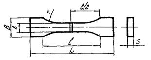
Рис.1. Образец для испытания сварных стыковых соединений на
растяжение
Таблица 2
|
Толщина стенки трубы S, мм
|
размеры образца, мм
|
|
B
|
b
|
L
|
l
|
r
|
|
От
10 до 20
|
40 ± 0,5
|
20 ± 0,1
|
170 ± 5
|
115 ± 5
|
60 ± 1
|
|
От
20 до 40
|
60 ± 0,5
|
40 ± 0,1
|
300 ± 5
|
200 ± 5
|
60 ± 1
|
|
Свыше
40
|
80 ± 0,5
|
60 ± 0,1
|
300 ± 5
|
200 ± 5
|
60 ± 1
|
7.5.1.9. Образцы следует вырезать из
участков, равномерно расположенных по всему периметру сварного стыка, путем
распиловки стыка на полосы с последующим их фрезерованием. Допускается
при толщине стенки трубы до 10 мм образцы вырубать штампом - просечкой. Ось
образца должна быть направлена вдоль оси трубы. Грат со сварного шва не снимают.
7.5.1.10. Испытание на растяжение
следует производить на разрывных машинах, обеспечивающих измерение нагрузки с
погрешностью не более 1 % от измеряемой величины.
Скорость
раздвижения зажимов испытательной машины должна составлять 50 мм/мин при
испытании образцов из ПНД, 100 мм/мин - при испытании образцов из ПВД.
Обработку
результатов испытания следует производить в соответствии с требованиями ГОСТ 11262-80 и ГОСТ
14359-69.
7.5.1.11. Качество сварных стыковых
соединений следует считать удовлетворительным, если все испытанные образцы
разрушились вне шва (вне плоскости сварки) или если коэффициент прочности
сварного соединения составил не менее 0,9.
Коэффициент
прочности сварного соединения Кс определяется по формуле

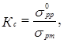
(1)
где 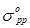
- прочность при разрыве
стыка;
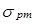
- предел
текучести материала трубы.
7.5.1.12. Испытание раструбных
соединений производят:
а) на
трубчатых образцах длиной (235 + L) ± 1 мм, сваренных с помощью муфты (рис. 2, поз.
а), на сдвиг растяжением при наружном диаметре труб до 50 мм;
б) на
кольцевых образцах высотой h, равной половине глубины раструба l, вырезаемых из раструбного соединения трубы c соединительной деталью (рис. 2, поз. б), на сдвиг сжатием по
схеме рис. 3
при наружном диаметре труб 50 мм и более.
7.5.1.13. Качество сварного
раструбного соединения считается удовлетворительным:
а) если при
испытании трубчатых образцов все разрушения происходили по основному материалу
трубы или соединительной детали;
б) если при
испытании кольцевых образцов на сдвиг разрушающее напряжение для ПВД составило
не менее 8 МПа (80 кгс/см2).
Разрушающее
напряжение при сдвиге определяется по формуле
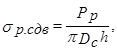
(2)
где Рр -
разрушающая нагрузка, Н;
Dc - диаметр
поверхности сварки, равный наружному диаметру трубы, мм;
h - высота кольца, мм.
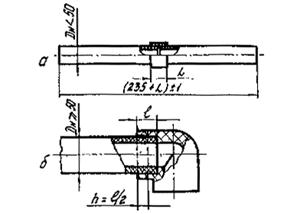
Рис. 2. Образцы для испытаний сварных раструбных соединений:
а - на сдвиг растяжением; s - на сдвиг сжатием
с вырезкой кольцевого образца; L - длина муфты; l - глубина раструба; h -
высота кольцевого образца
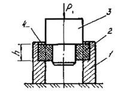
Рис.
3. Схема испытания раструбного сварного соединения на сдвиг
1 - матрица;
2 - кольцевой образец со сварным швом в центре стенки; 3 - пуансон; 4 - сварной
шов
7.5.1.14. Если результаты испытаний
образцов на растяжение или сдвиг оказались неудовлетворительными, то
разрешается провести повторные испытания на удвоенном числе образцов,
вырезанных из повторно сваренных допускных соединений. Если при повторном
испытании получены неудовлетворительные результаты хотя бы по одному
соединению, то сварщик, сваривший допускное соединение, признается не
выдержавшим испытания.
7.5.1.15. Сварщик, не выдержавший
испытания, может быть допущен к сварке трубопроводов только после повторных
испытаний, которые проводят не ранее чем через 10 дней с момента отстранения
его от работы.
7.5.1.16. Каждому сварщику,
допущенному к сварке, присваивают номер или шифр, который служит для
регистрации работ в сварочном журнале и для маркировки соединений на трубопроводе.
Маркировка
(шифр или номер) ставится сварщиком холодным клеймом на горячем расплаве грата
в двух диаметрально противоположных точках.
7.5.2. Подготовка труб и
соединительных деталей к оборке и сварке
7.5.2.1. Трубы и соединительные
детали, поступившие на монтаж, должны быть рассортированы по партиям,
сортаментам и виду материала, подвергнуты визуальному и измерительному
контролю.
7.5.2.2. На поверхности труб не должно
быть механических повреждений: сквозных пробоин, вмятин глубиной более 5 % от
толщины стенки трубы, надрезов и царапин в осевом направлении глубиной более 3
% и в кольцевом более 5 % от толщины стенки трубы (или более 1,0 мм).
7.5.2.3. Трубы, имеющие недопустимые
локально расположенные дефекты от механических повреждений, отделяют от партии
и используют для изготовления опорных узлов трубопроводов. При разрезке труб на
патрубки дефектные места удаляют. Полностью дефектные трубы и трубы, имеющие
трещины, пузыри и раковины, видимые без применения увеличительных приборов,
бракуют.
7.5.2.4. Па поверхности соединительных
деталей не должно быть забоин или надрезов глубиной более 5 % от толщины
стенки, а также визуально выявляемых трещин и раковин.
7.5.2.5. На сборку должны поступать бездефектные трубы и
соединительные детали с близкими геометрическими размерами соединяемых концов.
При этом следует контролировать у труб из ПНД, ПВД, ПП и соединительных деталей
из ПНД, привариваемых встык, наружные диаметр, толщину стенки и овальность
присоединительных концов, а у деталей из ПВД, привариваемых враструб, -
внутренний диаметр и овальность раструбных частей.
Для измерения применяют штангенциркули по ГОСТ
166-80* и рулетки по ГОСТ 7502-80*.
Измерение наружного диаметра проводят на
расстоянии не менее 100 мм от торцов труб и 5 - 10 мм от торцов
присоединительной части деталей. Внутренний диаметр раструбных частей деталей
измеряют с торцов.
Для труб и деталей диаметром 63 мм и менее при
измерении наружного диаметра, а также для раструбных частей деталей до 140 мм
включительно при измерении внутреннего диаметра за величину среднего диаметра
принимают среднее арифметическое из измерений диаметра в двух взаимно
перпендикулярных направлениях. Измерения проводят штангенциркулем с
погрешностью 0,1 мм.
Для труб и деталей диаметром более 63 мм значение
среднего наружного диаметра Dн (мм)
вычисляют по формуле (ГОСТ 18599-83*)
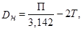
(3)
где П -
периметр (мм), измеренный рулеткой с точностью 0,5 мм,
Т - толщина ленты рулетки, мм.
Толщину стенки измеряют с торцов труб и деталей
штангенциркулем в четырех равномерно распределенных по окружности точках с
погрешностью не более 0,1 мм. Указанные величины должны быть в пределах
допусков, регламентированных соответствующими стандартами или техническими условиями.
Овальность концов труб и соединительных деталей не
должна выводить минимальный и максимальный диаметры за пределы их
номинального диаметра с учетом допусков. При превышении овальности должна быть
произведена калибровка концов труб и деталей в соответствии с СН
478-80.
Рекомендуется
при сборке труб и деталей производить их селективный подбор по
присоединительным размерам.
7.5.2.6. По истечении гарантийного
срока хранения полиэтиленовых труб и соединительных деталей следует проверить
их качество до проведения сварочно-монтажных работ.
Для проверки
качества материала труб необходимо произвести контрольные испытания на
растяжение образцов типа I или II по ГОСТ 11262-80*. При этом
от каждой партии отбирают 0,5 % труб (но не менее 3 труб) и из каждой трубы
вырезают вдоль образующей по 5 образцов. Испытания проводят на разрывных
машинах при скорости перемещения подвижного зажима 25 мм/мин (для ПВХ), 50
мм/мин (для ПНД и ПП) и 100 мм/мин (для ПВД). В процессе испытания на
растяжение определяют величину предела текучести и относительное удлинение при
разрыве. Значения указанных механических свойств должны удовлетворять
требованиям государственных стандартов или технических условий на трубы из ПНД,
ПВД, ПП и ПВХ. Если нет условий для проведения испытаний, то применение труб и
деталей согласовывается с заводом-изготовителем.
7.5.2.7. Разметка труб должна
выполняться по размерам, указанным в чертежах, с учетом припусков на резку,
механическую обработку и сварку. Припуск на резку и механическую обработку
торцов труб следует принимать равным:
при резке и
обработке на стационарных механизмах (маятниковые пилы, трубоотрезные станки,
механические ножовки) - до 1 % от наружного диаметра трубы;
при резке и
обработке с помощью переносных инструментов (ручные и механизированные ножовки,
поперечные пилы) - от 2 до 3 % от наружного диаметра трубы.
Припуск на
сварку (оплавление торцов и осадку стыка) следует принимать равным 10 % от
толщины стенки трубы.
7.5.2.8. Разметку следует производить
с применением следующих измерительных инструментов: рулеток - по ГОСТ 7502-80*;
линеек измерительных - по ГОСТ 427-75*;
штангенциркулей - по ГОСТ 166-80*; угольников
поверочных - по ГОСТ 3749-77*;
угломеров - по ГОСТ 5378-66*; циркулей -
по ГОСТ 24472-80Е
и др.
Линии реза
следует наносить металлической чертилкой по ГОСТ 24473-80Е,
а размерные линии - мелом или восковым карандашом.
7.5.2.9. Резку труб следует
производить с помощью стационарных устройств, у которых режущим инструментом
являются:
стальные
дисковые пилы типа А, профиль 1 по ГОСТ
980-80*;
ленточные
пилы по ГОСТ
6854-77*;
абразивные
армированные круги по ТУ 2-036-772-84;
режущие
металлические полотна по ГОСТ 6645-86*.
Скорость
вращения дисковой пилы при резке должна составлять 2000 - 2300 об/мин, а
абразивного армированного круга - 3000 - 8500 об/мин.
В монтажных
условиях резку труб допускается выполнять ручными ножовками по металлу,
прямозубыми столярными ножовками, лучковыми и поперечными двуручными пилами.
7.5.2.10. Выравнивание торцов труб и
соединительных деталей перед сваркой производится механической обработкой с
помощью механизированных или ручных устройств (торцовок), входящих в комплект
сварочного оборудования, или на специальных стационарных станках.
7.5.2.11. Для снятия фасок на концах
труб следует применять приспособления, режущим инструментом которых являются
специальные фрезы или резцовые головки. В монтажных условиях допускается
снимать фаски с помощью ножа или
напильника по ГОСТ 1465-80*.
7.5.2.12. Отклонение от
перпендикулярности торцов труб в зависимости от наружного диаметра не должно
превышать:
0,5 мм для диаметров до 63 мм;
1,0 мм - более 63 до 200 мм;
2,0 мм - более 200 до 400 мм;
4,0 мм - более 400 до 630 мм
включительно.
Отклонение от
перпендикулярности измеряется с помощью угольника и линейки на базе наружной
поверхности трубы.
7.5.2.13. До проведения
сварочно-монтажных работ следует произвести механическую обработку торцовой
поверхности втулок под фланцы с целью выравнивания и (если требуется) нанесения
кольцевых уплотнительных канавок. Механическая обработка производится на
токарных станках, размеры и число уплотнительных канавок определяются проектом.
7.5.2.14. Перед сборкой и сваркой
труб, а также соединительных деталей следует тщательно очистить их
полость от грунта, грязи, снега, льда, камней и других посторонних предметов.
Концы труб и
присоединительные части деталей должны быть очищены от всех загрязнения: при сварке
встык - на расстояние не менее 50 мм от торцов, а при сварке враструб -
на расстояние, превышающее длину раструба на 50 мм.
Очистку
концов труб и деталей от пыли и песка производят сухими или увлажненными
концами (ветошью) с дальнейшей протиркой насухо. Если концы труб или деталей
окажутся загрязненными смазкой, маслом или какими-либо другими жирами, их
необходимо обезжирить с помощью уайт-спирита, ацетона или экстракционного
бензина.
Обязательно
следует обезжиривать свариваемые поверхности непосредственно перед сваркой в
случае:
а) если при
сварке встык торцы труб и деталей обрабатывали заранее вне сварочной установки;
б) если
сварка осуществляется враструб.
7.5.2.15. Деформированные или имеющие
глубокие (более 4 - 5 мм) забоины концы труб обрезают перпендикулярно к их оси,
а затем подвергают механической обработке (торцовке, снятие фасок), либо
отдельно с помощью обрабатывающих устройств, либо в сборе непосредственно в
зажимах сварочного устройства.
7.5.2.16. Сборку свариваемых труб и
деталей, включающую установку, центровку и закрепление свариваемых концов,
производят с помощью устройства для сварки, имеющего наружные или внутренние
центраторы.
Концы труб и
деталей центруют по наружной поверхности или по осям таким образом, чтобы
максимальная величина смещения наружных кромок не превышала 10 % номинальной
толщины стенки свариваемых труб. Подгонку труб при центровке осуществляют
поворотом одной или обеих труб вокруг их оси, установкой опор под трубы на
некотором расстоянии, использованием прокладок.
При разнице в
толщине стенок свариваемых труб или деталей свыше 15 % от номинальной толщины
стенки, или более 5 мм на трубе (детали), имевшей большую толщину, должен быть
сделан скос под углом 15 ± 3° к оси
трубы до толщины стенки тонкой трубы (детали).
При сварке
встык вылет концов трубы из зажимов центраторов должен составлять 15 - 50 мм,
а привариваемых деталей - не менее 5 мм; при сварке враструб вылет трубы не
должен превышать 1,5 длины раструбной части детали.
7.5.2.17. При сварке встык
закрепленные и сцентрированные концы труб и деталей подвергают механической
обработке - торцовке с целью выравнивания свариваемых поверхностей, удаления
слоя, подвергавшегося воздействию солнечной радиации и кислорода воздуха.
После
механической обработки прикосновение к поверхности торцов пальцами не
допускается. Удаление стружки изнутри трубы или детали следует производить с
помощью кисти, а снятие заусенцев с острых кромок торца - с помощью ножа.
После
обработки еще раз проверяют центровку и наличие зазоров в стыке. Между торцами,
приведенными в соприкосновение, не должно быть зазоров, превышающих:
0,3 мм для диаметров до 63 мм;
0,5 мм - более 63 до 200 мм;
0,7 мм - более 200 до 400 мм;
1,0 мм - более 400 до 630 мм
включительно.
Зазор
измеряют лепестковым щупом (ГОСТ 882-75*) с погрешностью 0,05 мм.
7.5.2.18. При сварке враструб торец
трубы должен быть перпендикулярным к ее оси, допустимое отклонение от
перпендикулярности должно соответствовать требованиям п. 7.5.2.12. На конце трубы должна быть снята
фаска размером 2 мм ´ 45°.
7.5.3. Соединение труб
контактной сваркой нагретым инструментом.
7.5.3.1. При сооружении напорных
трубопроводов трубы и соединительные детали из полиэтилена сваривают между
собой контактной сваркой нагретым инструментом встык или враструб.
Сваркой встык
соединяют:
трубы из ПНД,
ПВД и ПП с толщиной стенки более 3 мм, изготовленные по ГОСТ 18599-83*, ТУ
6-19-352-87, ТУ 38-102-100-76 (рис. 4, а);
трубы из ПНД
по ГОСТ 18599-83* с
соединительными деталями из ПНД по ОСТ 6-19-517-85 и трубы из ПНД по ТУ
6-19-352-87 с соединительными деталями из ПНД по ТУ 6-19-359-87 (рис. 4, поз. в
- е, рис. 5).
Сваркой
враструб соединяют между собой трубы из ПВД ГОСТ 18599-83* с
соединительными деталями из ПВД ОСТ 6-05-367-74 (рис. 6). Сварку тройников,
угольников, муфт и втулок под фланцы с переходами, втулками для штуцерных
соединений и втулками для дюритовых соединений производят аналогично сварке
тройников, угольников, муфт и втулок под фланцы с трубами.
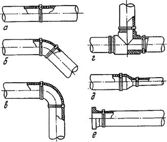
Рис. 4. Сварные стыковые соединения труб и
соединительных деталей из ПНД:
а - трубы с трубой; б, в - труб с угольниками соответственно 45° и 90°;
г - труб с тройником; д - труб с переходом; е - трубы с втулкой под фланец
7.5.3.2. Контактная сварка заключается
в нагревании (оплавлении) свариваемых поверхностей до вязкотекучего состояния
термопласта при непосредственном контакте их с нагретым инструментом и
последующим соединением под давлением. Оборудование для сварки приведено в
приложении 2.
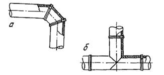
Рис.
5. Сварные стыковые соединения труб со сварными соединительными деталями:
а - труб с угольником 90; б - труб с тройником
Технологический процесс сварки
включает в себя следующие этапы:
нагрев
(оплавление) свариваемых поверхностей;
технологическую
паузу, обусловленную необходимостью удаления нагретого инструмента;
осадку стыка
(при сварке встык) и вдвигание конца трубы в раструб детали (при сварке
враструб);
охлаждение
сварного соединения.
7.5.3.3. Соединение труб и деталей из ПНД, ПВД и ПП следует
производить контактной сваркой нагретым инструментом при температуре не ниже:
+10 °С для труб из ПНД и ПВД и 0 °С - для труб из ПП. При более низких
температурах сварку следует осуществлять в утепленных укрытиях. При работе на
открытом воздухе место сварки следует защищать от ветра, атмосферных осадков,
пыли и песка.
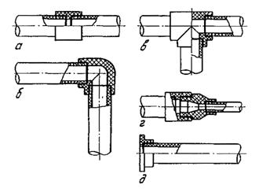
Рис.
6. Сварные раструбно-стыковые соединения труб и соединительных деталей из
ПВД:
а - трубы с трубой посредством муфты; б - труб с угольником; в - труб с
тройником; г - труб разных диаметров посредством муфты и перехода; д - трубы с
втулкой под фланец
7.5.3.4. Работы по сварке трубопроводов из ПНД и ПВД следует
выполнять в соответствии с настоящими ВСН, а трубопроводов из ПП - в
соответствии с СН 478-60.
7.5.3.5. Сварка встык. Основными параметрами процесса
стыковой контактной сварки являются:
температура нагретого инструмента Тн;
продолжительность нагрева (оплавления) торцов tоп;
давление нагретого инструмента на торцы при оплавлении
Роп;
давление на торцы при осадке Рос;
продолжительность паузы между окончанием оплавления и
началом осадки tп;
время достижения заданного уровня давления осадки tд;
продолжительность охлаждения сваренного стыка под
давлением осадки под давлением tохл.
Контактную сварку встык следует производить в
определенной последовательности (рис. 7, 8).
Значения параметров режимов сварки труб и
соединительных деталей из ПНД должны соответствовать значениям, приведенным в
табл. 3,
а труб из ПВД - табл. 4.
Нагрев (оплавление) торцов свариваемых труб и деталей
следует осуществлять одновременно (синхронно) посредством их контакта с
рабочими поверхностями нагретого инструмента (см. рис. 7, поз. г). Рабочие поверхности
инструмента, как правило, должны иметь антиадгезионное покрытие из лакоткани
или эмульсии на основе фторопласта (Ф-4Д). При отсутствии антиадгезионного
покрытия температуру нагретого инструмента (см. табл. 3, 4) следует снизить на 10 °С.
Падение температуры нагретого инструмента в процессе оплавления торцов
свариваемых заготовок не должно превышать 10 °С от нижнего предела
рекомендуемых температур.
В начале процесса оплавления создают повышенное давление
Роп.1 (см. рис. 8) в течение времени tоп.1 достаточного, чтобы поверхности торцов пришли в
полный контакт с поверхностями нагревателя. Такой контакт косвенно определяют
по появление по всему периметру оплавляемых торцов грата (валика вытесненного
расплава) высотой: до 0,5 мм при толщине станки до 7 мм; 1,0 мм - более
7 до 18 мм; 1,5 мм - более 18 до 30 мм; 3,0 мм - более 30 мм. В дальнейшем
нагрев должен вестись при пониженном давлении Роп.2 в течение
времени tоп.2 (см.
табл. 3,
4).
30 мм; 2,0 мм - более 30 мм. В дальнейшем
нагрев должен вестись при пониженном давлении Роп.2 в течение
времени tоп.2 (см.
табл. 3,
4).
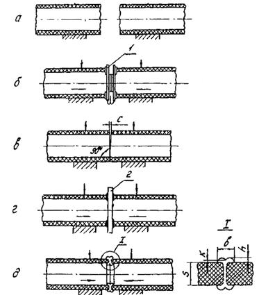
Рис.
7. Последовательность процесса контактной сварки встык труб из
полиэтилена:
а -
центровка и закрепление в зажимах сварочного устройства концов свариваемых
труб; б - механическая обработка торцов труб с помощью торцовки 1; в - проверка
точности совпадения торцов по величине зазора С; г - нагрев (оплавление)
свариваемых торцов с помощью нагретого инструмента 2; д - осадка стыка до
образования сварного соединения (в сечении 1 даны основные геометрические
размеры соединения встык, регламентированные п. 7.5.7.6)
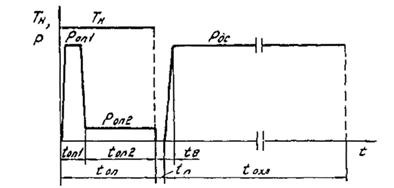
Рис. 8. Циклограмма процесса контактной сварки встык
При точной
подгонке торцов, если зазор (см. рис. 7, поз. в) в стыке не превышает 0,2
мы, допускается осуществлять оплавление в режиме постоянного давления, равного
Роп.2 в течение времени, определяемого суммой tоп.1
и tоп.2.
По окончании
процесса оплавления отрыв нагретого инструмента следует производить в
направлении, перпендикулярном оплавленной поверхности. На рабочих поверхностях
нагревателя не должен оставаться расплав в виде пленки толщиной более 0,3 мм.
Продолжительность
технологической паузы, представляющей собой время между окончанием оплавления
торцов и началом осадки стыка tп, не
должна превышать значений, указанных в табл. 3 и 4. За время паузы оплавленные
поверхности торцов не должны подвергаться воздействию влаги, ветра и пыли.
Осадку
стыка производят до заданного давления Рос величина и время
достижения которого должны соответствовать приведенный в табл. 3 и 4.
Охлаждение
сварного стыка следует производить под давлением осадки в течение времени tохл указанного в табл. 3 и 4. Не
допускается форсирование охлаждения стыка путем обливания его водой, обдува
воздухом и т.п.
При сварке в
условиях повышенных (более 30 °С) или пониженных (менее 10 °С) температур
окружающего воздуха температура нагретого инструмента, приведенная в табл. 3, 4, должна
быть соответственно понижена или повышена на 10 - 15 °С, а время охлаждения
стыка должно быть соответственно увеличено или уменьшено на 10 - 15 %.
Рабочие поверхности
нагревательного инструмента следует регулярно очищать от прилипшего
полиэтилена. В случае применения инструмента без антиадгезионного покрытия -
после каждого цикла оплавления. В случае применения инструмента с
антиадгезионным покрытием - при наличии оставшегося расплава.
Очистку
производят с помощью чистых хлопчатобумажных или льняных тканей на
горячем инструменте.
Сборка и
сварка труб и соединительных деталей из полиэтилена должны производиться с
помощью сварочных приспособлений, устройств, установок или машин (приложение 2),
позволяющих осуществить требуемые технологические операции, соблюсти параметры
технологических режимов (см. табл. 3, 4) и обеспечить получение
качественных сварных соединений.
Сварочная
установка должна содержать механизм центровки и зажима концов свариваемых труб
или соединительных деталей, механизм сближения заготовок и создания необходимого
давления, устройство для механической обработки кромок, их выравнивания и
обеспечения параллельности, инструмент для нагрева (оплавления) свариваемых
поверхностей, а также источник питания.
7.5.3.6. Сварка враструб. Контактная
сварка враструб основана на одновременном оплавлении (нагреве) внутренней
поверхности раструбной части соединительной детали и наружной поверхности
прямого конца полиэтиленовой трубы и на последующем соединении
оплавленных поверхностей.
Для повышения
надежности соединения необходимо дополнительно осуществлять сварку торца трубы
с поверхностью полки соединительной детали. Для этого нагревательный инструмент
должен обеспечивать оплавление указанных поверхностей и при соединении труба
должна вдвигаться в раструб соединительной детали до упора в полку.
Процесс
сварки враструб включает следующие этапы (рис. 9):
установку
ограничительного хомута 1 на расстоянии от торца трубы до края хомута, равном
глубине раструба l плюс 2 мм (см. рис. 9, поз.
а);
установку
дорна нагретого инструмента 2 в раструбе до упора в полку детали и прямого
конца трубы в гильзе до упора в полку гильзы (см. рис. 9, поз. б);
нагрев
(оплавление) свариваемых поверхностей в течение заданного времени и последующее
одновременное снятие детали и трубы с дорна и гильзы (см. рис. 9, поз.
в);
соединение
деталей между собой до упора в ограничительный хомут с выдержкой до
затвердевания оплавленного материала (см. рис. 9, поз. г).
Основными
параметрами процесса контактной сварки враструб являются:
температура
нагретого инструмента Тн;
время оплавления
(нагрева) tоп;
продолжительность
паузы между окончанием оплавления и вдвигания конца трубы в раструб tп,
продолжительность
выдержки соединения до затвердения расплавленного материала в процессе
охлаждения tохл.
Указанные
параметры режимов сварки должны соответствовать данным табл. 5.
Скорость
посадки концов труб и деталей на нагретый инструмент должна быть максимально
высокой, чтобы обеспечить большую равномерность прогрева свариваемых
поверхностей по длине раструбного соединения. Причем, первым надвигается
раструб, затем прямой конец трубы, либо они надвигаются одновременно.
Время
выдержки на нагретом инструменте должно обеспечить полное оплавление всей
площади сварки без потери формоустойчивости концов трубы и детали. Для более
равномерного оплавления при ручном способе сварки допускается вначале плавно
поворачивать нагретый инструмент на угол 15°. Процесс оплавления следует
заканчивать при появлении оплавленного материала высотой 1 - 2 мм у кромок торца
раструба и на трубе по всему периметру валика.
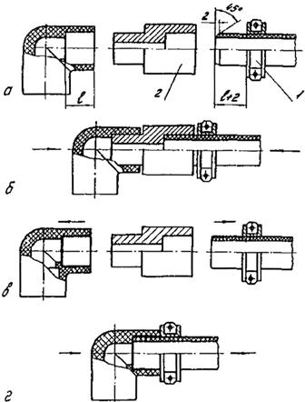
Рис. 9.
Последовательность процесса контактной сварки враструб труб и соединительных
деталей из ПВД:
а - центровка,
закрепление в зажимах сварочного устройства концов свариваемых труб и деталей и
установка ограничительного хомута 1; б - установка дорна нагретого инструмента
2 в раструбе и гладкого конца трубы в гильзе; в - нагрев (оплавление)
свариваемых концов, одновременно снятие их с дорна и гильзы; г - соединение
концов с выдержкой до затвердевания сплавленного материала
Таблица 5
|
Параметры сварки
|
Величина параметров
|
|
Температура
нагретого инструмента, °С
|
260 ± 10
|
|
Время
оплавления (нагрева) при толщине стенки, с:
|
|
|
до 3 мм
|
3 - 8
|
|
3 - 4 мы
|
6 - 12
|
|
4 - 5 мм
|
10 - 15
|
|
5 - 8 мм
|
15 - 20
|
|
Свыше 8 мы
|
20 - 30
|
|
Промежуток
времени между окончанием оплавления и вдвигания трубы в раструб, с
|
Не более 3
|
|
Продолжительность
выдержки соединения до затвердевания расплавленного материала, с
|
20 - 30
|
После
окончания нагрева трубу и деталь разводят, инструмент удаляют и быстро вдвигает
трубу в раструб до упора в полку детали. Во избежание остывания оплавленных поверхностей
и появления непроваров в сварном шве эта пауза не должна превышать 3 с.
После полного
вдвигания конца трубы в раструб не допускается взаимный сдвиг соединяемых
поверхностей в течение 20 - 30 с, необходимых для затвердевания расплавленного
материала.
После каждого
цикла сварки рабочие поверхности нагретого инструмента следует тщательно
очищать от следов налипшего расплава полиэтилена. Для очистки следует
использовать тканые хлопчатобумажные или льняные концы.
При
температуре окружающего воздуха ниже +10 °С температура нагретого инструмента,
указанная в табл. 4, должна быть повышена на 10 - 15 °С.
Если
свариваемые трубы и детали хранились при различных температурах окружающего
воздуха (в помещении иди вне помещения), то перед сваркой они должны бить
выдержаны при одинаковой температуре не менее 5 ч для выравнивания температуры.
Сборку и
сварку труб и соединительных деталей диаметром до 63 мм можно производить
вручную с использованием простейших центрирующих приспособлений (направлявших
уголков, лотков, призм и т.п.).
Для труб
большего диаметра следует применять наружные центраторы, позволяющие закрепить
и сцентрировать концы свариваемых труб и деталей и осуществить их
сведение и разведение в процессе нагрева и соединения.
Оплавление
свариваемых поверхностей при сварке враструб следует производить с помощью
нагретого инструмента, состоящего из гильзы для оплавления наружной поверхности
конца трубы, и дорна для оплавления внутренней поверхности раструба.
Нагревательные
инструменты для сварки враструб могут быть с газопламенным или электрическим
нагревом. Электрические нагревательные инструменты могут быть универсальными и
иметь сменные детали (дорн и гильзу), (рис. 10, поз. а, б).
Размеры
нагревательных инструментов для сварки труб и деталей различных диаметров
должны соответствовать, приведенным в табл. 6.
Для ограничения
длины конца прямого участка трубы, подвергаемой оплавлению, и для придания
концу трубы правильной геометрической формы при сварке враструб необходимо
применять ограничительные хомуты, внутренний диаметр которых должен быть на 0,2
мм меньше соответствующего наружного номинального диаметра труб.
Рекомендуемое
оборудование для сварки враструб приведено в приложении 2.
7.5.4. Соединение
трубопроводов на клею и резиновых кольцах.
7.5.4.1. Склеиванием следует соединять
трубы и соединительные детали из ПВХ, имеющие раструбы для клеевого соединения.
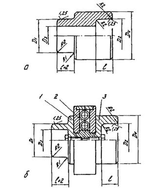
Рис. 10. Схема нагревательного инструмента для
раструбно-стыковой сварки:
а - газопламенного нагрева; б - с электрическим нагревом и сменными
деталями; 1 - дорн; 2 - электрический нагреватель; 3 - гильза
Таблица
6
|
Номинальный наружный диаметр труб Дн, мм
|
Основные размеры инструмента для сварки враструб,
мм (размеры даны при +20 °С)
|
|
Материал инструмента - сталь 45
|
Материал инструмента - дюралюминий Д16
|
|
Д1
|
Д2
|
Д3
|
Д4
|
Д1
|
Д2
|
Д3
|
Д4
|
l
|
|
16
|
15,8 - 0,045
|
16,0 - 0,045
|
6
|
22
|
15,7 - 0,045
|
15,9 - 0,045
|
6
|
22
|
|
|
20
|
19,8 - 0,045
|
20,0 - 0,045
|
8
|
28
|
19,7 - 0,045
|
19,9 - 0,045
|
8
|
28
|
|
|
25
|
24,7 - 0,045
|
24,9 - 0,045
|
12
|
34
|
24,6 - 0,045
|
24,8 - 0,045
|
12
|
34
|
|
|
32
|
31,6 - 0,05
|
31,9 - 0,05
|
18
|
42
|
31,5 - 0,05
|
31,8 - 0,05
|
18
|
42
|
|
|
40
|
39,5 - 0,05
|
39,8 - 0,05
|
24
|
52
|
39,4 - 0,05
|
39,7 - 0,05
|
24
|
52
|
|
|
50
|
49,5 - 0,06
|
49,8 - 0,06
|
30
|
62
|
49,4 - 0,06
|
49,7 - 0,06
|
30
|
62
|
|
|
63
|
62,5 - 0,06
|
62,8 - 0,06
|
40
|
80
|
62,3 - 0,06
|
62,6 - 0,06
|
40
|
80
|
|
|
75
|
74,4 - 0,06
|
74,8 - 0,06
|
50
|
94
|
74,1 - 0,06
|
74,5 - 0,06
|
50
|
94
|
|
|
90
|
89,2 - 0,07
|
89,7 - 0,07
|
62
|
110
|
88,9 - 0,07
|
89,4 - 0,07
|
62
|
110
|
|
|
110
|
109,1 - 0,07
|
109,7 - 0,07
|
76
|
135
|
108,7 - 0,07
|
109,3 - 0,07
|
76
|
135
|
|
|
140
|
138,9 - 0,08
|
136,0 - 0,08
|
100
|
170
|
138,5 - 0,08
|
139,2 - 0,08
|
100
|
170
|
|
Примечание.
Неуказанные предельные отклонения размеров принимаются для отверстий Д3
- по Н14 и вала - Д4 - по h 14 (СТ СЭВ
144-75).
Склеивание необходимо
производить с помощью клея марки ГИПК-127 по ТУ 6-05-251-95-79 в соответствии с
требованиями СН
478-80. Склеивание труб и деталей из ПВХ должно производиться при
температуре не ниже +5 °С.
7.5.4.2. На резиновых уплотнительных
кольцах следует соединять трубы и соединительные детали из поливинилхлорида,
имеющие раструбы под резиновые кольца.
Монтаж
раструбных соединений на резиновых уплотнительных кольцах следует выполнять в
соответствии с СН
478-80, а также с указаниями, изложенными в «Рекомендациях по проектированию
и монтажу наружных водопроводных и канализационных сетей из поливинилхлоридных
раструбных труб» (М., Стройиздат, 1984, с. 44).
Монтаж
раструбных соединений труб и деталей из ПВХ следует производить при температуре
окружавшего воздуха не ниже минус 10 °С.
7.5.5. Соединение
трубопроводов с помощью фланцев
7.5.5.1. Присоединение пластмассовых
трубопроводов к арматуре, насосам, резервуарам, металлическим трубопроводам и
другим узлам следует выполнять на свободных (накидных) металлических (или из
других материалов), оговоренных проектом, фланцах с использованием:
втулок под
фланцы (для труб из ПНД, ПВД, ПВХ) (рис. 11);
отбортовки
(для труб из ПП и ПВХ).
Трубы из ПВХ,
соединяемые на резиновых уплотнительных кольцах, присоединяют с использованием
чугунных патрубков-фланцев в соответствии с СН
478-60.
7.5.5.2. Втулки под фланцы и трубы из
ПНД и ПП соединяют между собой контактной сваркой нагретый инструментом встык,
а втулки под фланцы и трубы из ПВД - враструб. Сварку следует выполнять в
соответствии с указаниями раздела 7.5.3.5.
Не
допускается приваривать втулки под фланцы к трубам из другого материала, в том
числе втулки под фланцы из ПНД, к трубам из ПВД или втулки ив ПВД - к трубам из
ПНД.
Втулки под
фланцы и трубы из ПВХ следует соединять между собой склеиванием в
соответствии с СН
478-80.
7.5.5.3. Отбортовку труб из ПП и ПВХ
под фланцевое соединение следует производить в соответствии с СН
478-80.
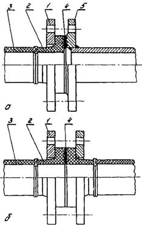
Рис. 11. Фланцевые соединения:
а - полиэтиленовых
труб с металлическими; б - полиэтиленовых труб между собой; 1 - фланец
металлический накидной; 2 - втулка из ПНД под фланец; 3 - труба из ПНД;
4 - прокладка; 5 - металлическая труба; арматура и т.д.
7.5.5.4. При сварке втулок под фланцы
с полиэтиленовыми трубами применяют сварочные устройства, оснащенные
приспособлениями для центровки и закрепления втулок.
7.5.5.5. Перед приваркой втулки к
трубе на замыкающем участке трубопровода следует обязательно
предварительно надеть накидной фланец на трубу.
7.5.5.6. При сборке фланцевых
соединений затяжку болтов следует производить поочередным завинчиванием
противоположно расположенных гаек тарированным ключом с усилием,
регламентированным проектом. Гайки болтов должны быть расположены на одной
стороне фланцевого соединения. Прокладки должны иметь размеры, соответствующие
уплотнительным поверхностям втулки под фланец. Материал прокладок указывается
проектом.
Непараллельность
буртов втулок под фланцы должна быть не более 0,1 % от их наружного
диаметра и контролироваться набором щупов на базе наружного диаметра буртов.
7.5.6. Организация и
проведение сварочно-монтажных работ
7.5.6.1. К сварочно-монтажным работам
допускается обученный персонал при наличии комплекта необходимого оборудования
и инструмента, после завершения разработки траншеи и доставки на трассу
подготовленных труб (секций) в расчете на суточный объем строительства
трубопровода.
Доставку на
трассу полиэтиленовых труб следует производить согласно указаниям разд. 7.4.
7.5.6.2. Доставленные на трассу трубы
или сварные секции должны быть разложены на строительной полосе вдоль траншеи
на расстоянии не менее чем 1,5 м от ее бровки.
7.5.6.3. При производстве
сварочно-монтажных работ (как и при выполнении других операций) запрещается
сбрасывать трубы с транспортных и технологических средств, а также перемещать
их по земле волоком. Эти же требования распространяются и на соединительные
детали (узлы).
7.5.6.4. В зависимости от объема работ
и местных условий могут быть применены две схемы организации сварочно-монтажных
работ - базовая и трассовая.
При базовой
схеме в месте складирования поступающих на монтаж труб, соединительных деталей,
фланцев и арматуры организуют стационарный (или полустационарный)
сварочно-монтажный участок, предназначенный для сварки труб в секции длиной 12
- 18 м и изготовления сварных деталей и узлов. Сваренные секции и узлы
доставляют на трассу или объект, где производят сварку секций в плети, а затем
в непрерывную нитку, приварку к трубопроводу сварных узлов с установкой
фланцев.
При трассовой
схеме трубы исходной длины (обычно 6 м) и соединительные детали (в основном
втулки под фланцы) сразу доставляют на трассу или объект и сваривают в плети, а
затем в непрерывную нитку.
Базовая схема
является основной схемой организации сварочно-монтажных работ.
Трассовую
схему следует применять при: а) сооружении участков трубопроводов протяженностью
до 5 км; б) затруднении или невозможности доставки трубных секций; в) поставке
труб заводом-изготовителем в бухтах или на катушках.
7.5.6.5. Проведение сварочно-монтажных
работ на стационарных базах должно обеспечить максимально возможную индустриализацию
монтажа. На стационарных базах следует выполнять следующие виды работ:
а) входной
контроль, разметку, резку, механическую обработку труб и соединительных
деталей;
б) сварку
труб в секции;
в) приварку к
трубам (или патрубкам) соединительных деталей: втулок под фланцы, отводов,
тройников, переходов;
г)
изготовление укрупненных узлов.
На
изготовленные узлы наносят маркировку с указанием номера линии и узла.
Маркировку наносят цветной водостойкой краской, нагретым клеймом или с помощью
бирок.
7.5.6.6. При сварке труб в секции в
стационарных условиях сварочный пост, состоит из центратора, устройства для
обработки торцов труб, нагревательного инструмента с блоком питания. Сварочная
установка должна быть расположена на ровной площадке с деревянным настилом и
оснащена стеллажами для складирования и подачи труб на сварку, съема и
накопления трубных, секций (рис. 12,
поз. а).
Для повышения
производительности при больших объемах работ сварочный пост следует комплектовать
двумя центраторами с одним нагревательным инструментом и блоком питания (рис. 12, поз.
б).
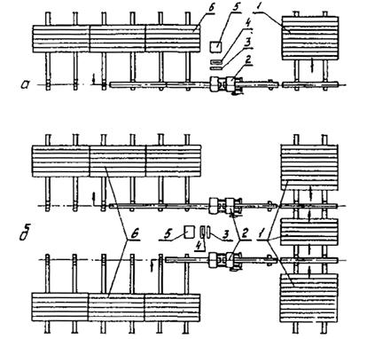
Рис. 12. Схема организации сварочных постов при сварке
трубных секций в стационарных условиях:
а - с одним центратором; б - с двумя центраторами; 1 - место
складирования труб; 2 - центратор; 3 - устройство для обработки торцов труб; 4
- нагревательный инструмент; 5 - блок питания; 6 - место складирования трубных
секции
7.5.6.7. Сварку трубопровода следует
производить согласно указаниям разд. 7.5.7.5.,
как правило, на бровке траншеи. При необходимости сварка трубных секций или
узлов может выполняться в траншее, котловане или колодце. При этом размеры
траншеи, котлована или колодца должны быть достаточными для размещения
сварочного устройства и проведения сварочных работ.
В трассовых
условиях производят, как правило, сварку прямых стыков.
При сварке
трубных секций в непрерывную нитку для установления требуемого усилия,
развиваемого подвижным зажимом центратора при оплавлении и осадке стыка (см. п.
7.5.3.5.),
следует учитывать силы трения от привариваемой секции о грунт (опоры) при ее
перемещении. Это усилие суммируется с усилием, требуемым для оплавления или
осадки стыка, и определяется по динамометру при холостом ходе подвижного зажима
центратора с закрепленной в нем секцией.
При сварке линейной
части трубопровода в непрерывную нитку сварочный пост оснащается одним, двумя
или тремя центраторами, устройством для торцовки труб, нагревательным
инструментом, блоком питания и передвижной электростанцией.
При сварке
трубопровода с двумя центраторами работы следует выполнять в такой
последовательности (рис. 13):
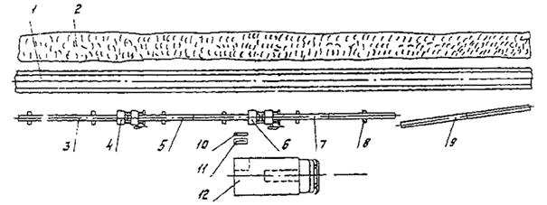
Рис.
13.
Схема организаций сварочного поста при сварке трубопровода в непрерывную нитку
с двумя центраторами:
1 - траншея; 2 - отвал грунта; 3 - свариваемый
трубопровод; 4 - первый центратор; 5 - приваренная к трубопроводу секция; 6 -
второй центратор; 7 - привариваемая секция; 8 - лежки ила инвентарные опоры; 9
- трубная секция; 10 - устройство для обработки торцов труб; 11 -
нагревательный инструмент; 12 - передвижная электростанция на базе автомобиля
трубные
секции (или трубы) укладывают на подсыпной грунт, лежки или инвентарные опоры и
выравнивает в линию;
концы свариваемых
трубных секций укрепляют в зажимах первого центратора, очищают от загрязнения,
торцуют и сваривают согласно п. 7.5.3.5;
в процессе
охлаждения стыка в зажимах первого центратора производят сборку и сварку
следующего стыка с использованием второго центратора;
первый
центратор снимают с охлажденного стыка и перемещают для сборки и сварки
последующего стыка, а в дальнейшем цикл повторяется.
При сварке трубопроводов
диаметром 225 мм и более для перемещения сварочного оборудования, подвозки и
поддержания привариваемой трубы или секции следует использовать грузоподъемные
машины (рис. 14).
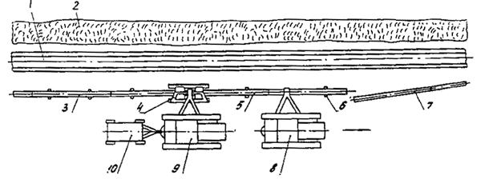
Рис.
14.
Схема сварки трубопровода в непрерывную нитку с использованием одного
центратора и грузоподъемной техники:
1 - траншея; 2 - отвал грунта; 3 - свариваемый
трубопровод; 4 - центратор (сварочная установка); 5 - привариваемая секция; 6 -
лежка или инвентарная опора; 7 - трубная секция; 8 - трубоукладчик для подъема
секции; 9 - трубоукладчик для перемещения центратора
(сварочной установки) и электростанции; 10 - электростанция
7.5.6.8. Сварку захлестов производят в
наиболее холодное время суток.
Свариваемые
концы трубопроводов сводят, размечают, обрезают с напуском 40 - 50 мм и
укрепляют в зажимах центратора. При этом трубопровод, конец которого укрепляют
в подвижном зажиме центратора, деформируют (оттягивают) в горизонтальной
плоскости с образованием прогиба («змейки»), достаточного для требуемого
перемещения зажима. Для уменьшения сил трения трубопровода при перемещении
подвижного зажима под трубопровод подкладывают катушки из обрезков труб, бревен
и т.д.
7.5.6.9. В процессе монтажа концы
трубопроводов с втулками под фланец следует закрывать заглушками или чехлами
для защиты от механических повреждений и засорения трубопровода.
При
производстве сборочных и сварочных работ следует пользоваться инвентарными
монтажными опорами.
7.5.7. Контроль качества
сварных соединений
7.5.7.1. При строительстве
трубопроподов для качественного выполнения сварочных работ производят:
а)
технический осмотр сварочных устройств (нагревательного инструмента, сварочного
центратора, торцовки, блока питания);
б) входной
контроль качества применяемых материалов и изделий;
в)
операционный контроль качества сборки под сварку и режимов сварки;
г) визуальный контроль сварных соединений и
измерительный контроль геометрических параметров;
д) разрушающий контроль качества сварных соединений;
е) испытания сваренных трубопроводов на прочность и
проверку на герметичность.
7.5.7.2. Технический осмотр сварочных устройств производят с
целью обеспечения требований к оборке (см. пп. 7.5.2.16, 7.5.2.17) и
сварке труб и соединительных деталей (см. пп. 7.6.3.5,
7.5.3.6).
7.5.7.3. Входной контроль качества применяемых труб и
соединительных деталей включает: проверку наличия заводских документов, а также
визуальный контроль внешнего вида, измерительный контроль линейных размеров и
механические испытания; при этом должны быть соблюдены требования разд. 6 пп. 7.5.2.2 - 7.5.2.6.
7.6.7.4. Операционным контролем предусматривается:
а) проверка качества подготовки концов труб и деталей
под сборку и сварку (см. пп. 7.5.2.12, 7.5.2.14, 7.6.2.16 - 7.5.2.18);
б) контроль режимов сварки (температура нагретого
инструмента, продолжительности плавления и технологической паузы, давления при
оплавлении и осадке, времени достижения заданного давления осадки, продолжительности
охлаждения соединения). Значения параметров режимов сварки должны отвечать
требованиям пп. 7.5.3.6 и 7.5.3.6.
Рабочими средствами измерений и контроля режимов
сварки являются:
секундомеры или реле времени - для контроля
длительности этапов процессов сварки;
динамометры и тензометры (измерение усилий сжатия),
манометры (измерение давления в гидро- или пневмосистемах установок) - для
контроля давления при оплавлении и осадке стыка;
термометры (сопротивления, термоэлектрические,
дилатометрические и т.д.) с вторичными показывающими приборами - для контроля
температуры нагревательного инструмента;
термометры жидкостные - для измерения температуры
окружающей среды.
7.5.7.5. Внешний осмотр сварных
соединений в измерение геометрических параметров должны производиться в 100
%-ном объеме.
7.5.7.6. По внешнему виду сварные
стыковые соединения полиэтиленовых труб и соединительных деталей должны
удовлетворять следующим требованиям:
а) угол
излома продольной оси труб в стыке или оси труб и приваренных к ним
соединительных деталей не должен превышать 10°;
б) смещение
кромок в стыке не должно превышать 10 % от номинальной толщины стенки трубы;
в)
вытесненный из стыка материал (грат) должен быть равномерно распределен по
периметру стыка, оба валика грата должны быть симметричными;
г) высота
валиков (рис. 15,
поз. а) должна находиться в пределах 0,15 - 0,25 номинальной толщины стенки
труб S;
д) ширина
грата (рис. 15,
поз. в) должна быть в пределах 1,8 - 2,2 его высоты;
е) высота
усиления сварного шва (рис. 15, поз. г) должна быть не менее 0,5h (при этом за h
принимается минимальная высота из h1
и h2);
ж) поверхность грата должна быть гладкой без визуально
выявляемых пор и трещин, валики не должны иметь резкой разграничительной линии.
7.5.7.7. Для контроля геометрии
сварного стыкового соединения и шва следует использовать: угломер (ГОСТ
5378-66*) - для измерения угла излома стыка; штангенциркуль ШЦ-1
( ГОСТ
166-80*) - для измерения смещения кромок и размеров грата;
приспособление (см. рис. 12, поз.
в, г) - для измерения c помощью лепесткового щупа (ГОСТ
882-75*) величины усиления сварного шва.
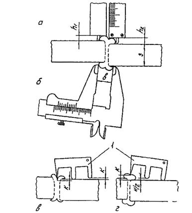
Рис. 15.
Схема измерения параметров стыкового соединения:
а - высота валиков грата h1, h2; б -
ширина грата b; в, г - величина усиления К (случай «в» - брак); 1 -
приспособление для определения К с помощью щупа
7.5.7.8. По внешнему виду сварные
раструбные соединения труб с соединительными деталями должны удовлетворять
следующим требованиям:
а) на
наружной поверхности раструбных частей деталей не должно быть визуально
выявляемых трещин и складок, вызванных перегревом деталей при сварке;
б) у кромки
раструбной части детали, прилегающей к наружной поверхности трубы, должен быть
виден сплошной (по всему периметру) валик оплавленного материала, выступающий
за торцовую поверхность раструба и наружную поверхность трубы;
в) угол
излома продольной оси трубы и приваренной к ней соединительной детали не должен
превышать 10°.
7.5.7.9. Стыковые соединения, не
удовлетворяющие требованиям п. 7.5.7.6
и раструбные соединения - требованиям п. 7.5.7.8, бракуют.
Стыковые
соединения, забракованные при визуальном контроле, исправлению не подлежат; они
должны быть вырезаны, после выявления и устранения причин появления брака
сварены вновь либо на их место должны быть вварены катушки длиной не
менее 200 мм. В дефектном раструбном соединении следует вырезать соединительную
деталь и приварить новую. Если необходимо удлинить укороченную при резке трубу,
к ней следует приварить катушку длиной не менее 200 мм.
7.5.7.10. Разрушающий контроль
качества сварных соединений путем механических испытаний производят:
а) на пробных
соединениях, свариваемых при настройке сварочного оборудования, при уточнении
режимов сварки новой партии или сортамента труб;
б) на
допускных соединениях, свариваемых в соответствии с п. 3.2;
в) на
контрольных соединениях, отбираемых для контроля в процессе сварки
трубопроводов по требованию заказчика или в соответствии с требованиями проекта
в количестве не более 1 % от сваренных соединений.
В качестве
контрольных соединений следует выбирать сварные стыковые и раструбные
соединения, наихудшие по внешнему виду.
Механические
испытания производят в соответствии с пп. 7.5.1.6 - 7.5.1.10,
7.5.1.12.
7.5.7.11. Если результаты механических
испытаний контрольного стыкового или раструбного соединения не удовлетворяют
требованиям пп. 7.5.1.11, 7.5.1.13, из нитки
трубопровода вырезают удвоенное число соединений, которое вновь подвергают
механическим испытаниям.
При получении
неудовлетворительных результатов испытаний, хотя бы одного из дополнительных
контрольных соединений, необходимо:
а) сварку прекратить и установить причину получения
некачественных соединений; работа может быть продолжена тем же сварщиком и на
той же установке только после устранения причини брака и получения
удовлетворительных результатов испытания дополнительно
сваренного допускного соединения в соответствии с п. 7.5.1.3; если причиной брака является низкая
квалификация сварщика, то его отстраняют от сварки полиэтиленовых
трубопроводов;
б) все стыки,
сваренные сварщиком с момента последних механических испытаний, подвергнуть
повторному визуальному контролю и измерениям; соединения, не удовлетворяющие
требованиям пп. 7.5.7.6, 7.5.7.8, должны быть
вырезаны и заварены вновь.
7.5.7.12. Результаты контроля и
испытаний должны быть оформлены в соответствии с действующими нормами
исполнительной производственной документации.
7.6. Укладка и закрепление
трубопровода
7.6.1. Работы по укладке плетей трубопровода
необходимо производить не ранее, чем через 10 ч после завершения сварочных
работ.
7.6.2. Укладку трубопровода в летний
период следует осуществлять при наиболее низких температурах (либо в холодные
дни, либо в утренние часы). Если эти условия не могут быть выполнены,
трубопровод укладывают змейкой по ширине траншеи или предусматривают
технологические разрывы в нем, которые должны быть спарены после укладки
трубопровода в проектное положение.
7.6.3. Укладку трубопровода диаметром
110 мм и более в траншею следует производить с помощью автокранов,
трубоукладчиков, оснащенных специальными троллейными подвесками (с катками,
облицованными полиуретаном, с пневмобаллонами, с массивными шинами и т.п.), а
также мягкими монтажными полотенцами.
Допускается производить
укладку трубопровода диаметром до 110 мм вручную с использованием ремней,
пеньковых или капроновых канатов, брезентовых полотенец и т.д.
7.6.4. Трубопровод необходимо опускать
в траншею плавно, без рывков и резких изгибов. Опускаемая в траншею плеть
трубопровода должна иметь вид плавной кривой. При спуске трубопровод не должен
касаться стенок траншеи. Сбрасывать трубопровод в траншею запрещается.
7.6.5. Дно траншеи при прокладке
пластмассовых трубопроводов должно быть тщательно выровнено и спланировано в
соответствии с проектными отметками и так, чтобы трубопровод по всей своей
длине не опирался на грунт. При прокладке трубопроводов в грунтах с каменистыми
включениями дно траншеи выравнивается подсыпкой из мягкого грунта или песка
слоем, достаточным для полного сглаживания неровностей, но не менее 0,2 м над
выступами дна траншеи.
7.6.6. При укладке трубопровода на
коротких участках трассы допускается в качестве грузоподъемных средств
использовать вместо трубоукладчиков автокраны и стреловые краны на гусеничном
ходу соответствующей грузоподъемности, которые должны быть оснащены мягкими
монтажными полотенцами.
7.6.7. Не допускается при укладке
трубопровода использовать в качестве монтажной оснастки универсальные кольцевые
стропы или «удавки» из стального каната.
7.6.8. При укладке трубопровода могут
быть использованы два метода производства работ: непрерывный и цикличный.
7.6.9. Непрерывный метод укладки
предусматривает размещение трубоукладчиков в колонне на расстояниях, указанных
в табл. 7, и их
безостановочное перемещение вдоль трассы в процессе спуска укладываемой плети.
В качестве грузозахватной оснастки здесь следует применять троллейные подвески.
Высота подъема трубопровода над строительной полосой должна быть в пределах 0,5
- 0,8 м.
Таблица 7
7.6.10. Цикличный метод укладки
трубопроводов может осуществляться или способом перехвата, или способом
переезда.
Трубоукладчики
в исходном положении устанавливаются вдоль укладываемого трубопровода на
расстояниях, определяемых по табл. 7.
7.6.11. Способ перехвата
осуществляется в следующем порядке. Трубоукладчики в исходном положении
устанавливаются вдоль укладываемого трубопровода и приподнимают плеть над
строительной полосой на высоту в пределах 0,5 - 0,8 м; затем они
надвигают плеть к оси траншей и опускают ее до высоты в пределах 0,2 - 0,5 м
(над уровнем строительной полосы); после этого последний трубоукладчик
продолжает спуск до выхода грузозахватного приспособления из-под нагрузки и
перемещается к стоящему перед ним трубоукладчику. Подъехавший трубоукладчик
берет на себя нагрузку от массы трубопровода, освобождая другой трубоукладчик,
который отъезжает вперед на расстояние, указанное в табл. 7. Если в работе участвуют 3 трубоукладчика, то последовательность
их замены аналогична.
7.6.12. Способ переезда осуществляется
в следующем порядке. Вначале выполняются операции в последовательности,
указанной в п. 7.6.11. Последний
трубоукладчик, освободившийся от нагрузки, перемещается вперед, объезжая
впередистоящий трубоукладчик (трубоукладчики), и становится во главе колонны.
После этого он вывешивает трубопровод на высоту в пределах 0,5 - 0,8 м над
поверхностью строительной полосы. Таким образом повторяется исходная схема, и
дальнейший процесс переезда трубоукладчиков осуществляется аналогично.
7.6.13. В качестве грузозахватной
оснастки при цикличных способах укладки следует использовать мягкие монтажные
полотенца.
7.6.14. Технология и организация работ
по балластировке и закреплению трубопроводов от всплытия выполняются по СНиП
III-42-80.
7.6.15. Для балластировки трубопровода
следует применять конструкции из рулонных синтетических материалов с
грунтовым заполнителем. При закреплении трубопровода анкерными устройствами
необходимо применять мягкие синтетические силовые пояса.
7.7. Очистка полости и
испытание трубопровода.
7.7.1. Очистка полости, испытание на
прочность и герметичность производятся после укладки и засыпки трубопровода.
7.7.2. При производстве работ открытые
торцы трубопровода должны закрываться временными инвентарными заглушками во
избежание попадания в полость посторонних предметов, воды, грунта, снега и т.п.
7.7.3. Очистку полости трубопроводов
следует выполнять одним из следующих способов:
промывкой с
пропуском эластичных поршней-разделителей;
продувкой без
пропуска очистных устройств.
7.7.4. Очистку полости промывкой
следует выполнять на трубопроводах (участках трубопроводов), которые испытывают
гидравлическим способом.
При промывке
по трубопроводам пропускают поршни-разделители, перемещающиеся в потоке воды,
закачиваемой для гидравлического испытания. Впереди поршней-разделителей в
трубопровод для размыва загрязнений заливают воду в объеме, равном 10 - 15 от
объема участка.
Пропуск
очистных устройств в потоке воды обеспечивает удаление из трубопровода не
только загрязнений, но и воздуха, что исключает необходимость устанавливать
воздухоспускные краны (кроме кранов, предусмотренных проектом для
эксплуатации).
Скорость
перемещения очистных устройств при промывке должна быть не менее 1 - 1,5 км/ч,
что определяется производительностью заливочного агрегата. Промывка считается
законченной, когда очистное устройство после прохода по трубопроводу выходит из
него неразрушенным.
7.7.5. Очистку полости продувкой без
пропуска очистных устройств осуществляют скоростным потоком (15 - 20 м/с)
воздуха или природного газа на трубопроводах, испытание которых осуществляют
этими средами.
7.7.6. Протяженность участка,
продуваемого без пропуска очистных поршней, не должна превышать 3 км.
7.7.7. Испытание трубопроводов на
прочность и проверку на герметичность проводят, как правило, гидравлическим
способом (водой).
Разрешается
проводить испытание сжатым воздухом в случаях, когда в районе трассы нет воды
или при низких температурах наружного воздуха.
7.7.8. Способ испытания трубопровода,
границы участков, величины испытательных давлений и схема проведения
испытаний определяются проектом. Протяженность отдельных участков трубопровода,
подлежащих испытанию на прочность и герметичность, уточняются в
специальной (рабочей) инструкции в зависимости от конкретных условий
строительства.
7.7.9. Испытание трубопровода допускается проводить не
ранее чем через 24 ч после окончания сварки (склеивания ) последнего стыка.
7.7.10. Величина давления при испытании на прочность должна
быть равна 1,25 рабочего давления, а при проверке на герметичность давление
должно быть равно рабочему давлению.
Продолжительность, выдержки при испытании на прочность
6 ч, а при проверке на герметичность определяется временем, необходимым для
тщательного осмотра трассы с целью выявления утечек, но не менее 6 ч.
7.7.11. Трубопровод считается выдержавшим гидравлическое
испытание на прочность и проверку на герметичность, если за время испытания на
прочность в течение 6 ч давление по показаниям манометров остается неизменным,
а при проверке на герметичность не будут обнаружены утечки.
7.7.12. После гидравлического испытания из трубопроводов
должна быть полностью удалена вода. Удаление воды проводят с помощью эластичных
поршней-разделителей, перемещаемых по трубопроводам под давлением воздуха или
газа.
7.7.13. Для удаления воды из газопроводов пропускают
эластичные поршни-разделители (ДЗК) под давлением сжатого воздуха или газа в
два этапа:
предварительный - удаление основного объема воды;
окончательный (контрольный) - полное удаление воды из
газопровода.
7.7.14. Результаты удаления воды из газопроводов следует
считать удовлетворительными, если впереди контрольного поршня-разделителя нет
воды, и он вышел неразрушенным. В противном случае необходимо дополнительно
пропускать контрольные поршни-разделители до тех пор, пока из газопроводов не
будет полностью удалена вода.
8. ТЕХНИКА БЕЗОПАСНОСТИ И
ПРОИЗВОДСТВЕННАЯ САНИТАРИЯ
8.1. При производстве работ по строительству
пластмассовых трубопроводов следует руководствоваться следующими документами: СНиП III-4-80;
ГОСТ 12.3.009-76*; ГОСТ 12.3.003-86*; ГОСТ 12.1.004-85; Правилами
технической эксплуатации электроустановок потребителей и Правилами техники
безопасности при эксплуатации электроустановок потребителей (М.: Энергоиздат,
1986); Правилами устройства и безопасной эксплуатации грузоподъемных кранов
(М.: Недра, 1972); Правилами перевозки грузов автомобильным транспортом (М.:
Транспорт, 1984); Правилами техники безопасности при строительстве
магистральных стальных трубопроводов (М.: Недра, 1982); Правилами безопасности
в газовом хозяйстве (М.: Недра, 1980).
8.2. При выполнении сварочно-монтажных
работ во время сооружения трубопроводов на действующих объектах,
технологические процессы которых связаны с нефте- газосодержащими средами,
необходимо соблюдать границы зон ограничения на проведение сварочных работ.
8.3. К проведению сварочно-монтажных
работ допускаются лица не моложе 18 лет, прошедшие медицинское
освидетельствование, производственное обучение и обучение правилам техники
безопасности, сдавшие соответствующие экзамены и имевшие удостоверения. Лица,
страдающие хроническими заболеваниями верхних дыхательных путей, к
сварочно-монтажным работам не допускаются.
8.4. Помещения, в которых выполняется
механическая обработка труб и соединительных деталей, производится изготовление
сварных узлов трубопроводов, должны отвечать требованиям санитарных норы
проектирования промышленных предприятий, утвержденных Госстроем СССР. В местах
производства работ с пластмассовыми трубами, а также в местах их
хранения запрещается хранить легковоспламеняющиеся вещества, курить,
пользоваться открытым пламенем, допускать скопления стружки и промасленных
концов.
8.5. Ручные электроинструменты,
применяемые при выполнении монтажно-сварочных работ, должны иметь двойную
изоляцию или питаться напряжением не выше 42 В.
Все электрифицированные
станки и устройства для механической обработки и сварки с напряжением выше 42 В
должны быть надежно заземлены, а токоподводящие провода - иметь надежную
изоляцию и прокладываться в местах, исключающих их повреждения.
Подключение
сварочных установок и устройств к электрической сети и отключение их
должны производиться электромотором. Перед ремонтом электроустановки должны
быть отключены от сети.
8.6. При применении сварочных
установок и других устройств следует руководствоваться техническими описаниями
и инструкциями по их эксплуатации.
8.7. При выполнении работ по сварке
пластмассовых трубопроводов необходимо использовать следующие средства
индивидуальной защиты рабочих: хлопчатобумажные костюмы или комбинезоны,
береты, перчатки или рукавицы, ботинки или сапоги, защитные очки с прозрачными
стеклами.
В сырую
дождливую погоду при работе на мокром грунте сварщик дополнительно должен
пользоваться диэлектрическими перчатками и галошами. При дожде и снегопаде
сварочные работы должны быть прекращены, если работа ведется на открытом
воздухе.
8.8. При сварке в закрытом помещении
рабочие места сварщиков должны быть оборудованы местными отсосами. На участке
сварки должна быть предусмотрена приточно-вытяжная вентиляция с четырехкратным
обманом.
8.9. При работе с нагревательными
инструментами для исключения ожогов, поражения электрическим током и
воспламенения горючих веществ необходимо соблюдать следующие правила:
не оставлять
нагревательный инструмент с включенным электропитанием при длительных перерывах
в работе;
содержать
нагревательный инструмент в теплозащитных чехлах;
протирку
рабочих поверхностей инструмента производить сухими концами без применения
растворителей в рукавицах;
не допускать
перегрева нагревателей с фторопластовым антиадгезионным покрытием, так как при
температурах выше плюс 280 °С фторопласт разлагается с выделением токсичных
летучих продуктов.
8.10. Работы по сварке стыков
трубопроводов, расположенных на высоте, необходимо производить при соблюдении
следующих правил:
рабочие места,
расположенные над землей или полом на высоте 1 м и более, должны быть ограждены
перилами;
при
невозможности или нецелесообразности устройства ограждения рабочие должны быть
обеспечены предохранительными поясами. Места закрепления карабина
предохранительного пояса должны быть заранее указаны мастером или
производителем работ;
работы,
выполняемые на высоте более 5 м от поверхности перекрытия или рабочего настила
непосредственно с конструкции, оборудования и т.п., должны производиться с
применением предохранительного пояса.
8.11. При укладке трубопровода в траншею вручную число
рабочих должно быть таким, чтобы на каждого приходился участок трубы массой не
более 35 кг - для мужчин и 20 кг - для женщин.
При укладке трубопровода запрещается нахождение
рабочих между трубопроводом и траншеей.
8.12. Администрация в зависимости от местных условий в
отдельных случаях может предусмотреть дополнительные мероприятия, повышающие
безопасность работ.
8.13. При производстве работ механизмы и грузы следует
располагать за призмой обрушения грунта в траншее.
8.14. При испытании трубопровода следует поднимать
давление (воды или воздуха) плавно до испытательного. При этом рабочие и
механизмы должны находиться за пределами охранной зоны, предусмотренной при
испытаниях стальных трубопроводов.
К трубопроводу, предназначенному к испытанию,
разрешается подходить для осмотра после снятия давления от испытательного до
рабочего.
8.15. Применительно к местным условиям администрация
должна разработать инструкцию по технике безопасности с соответствующим
утверждением.
9. ПРИЕМКА В ЭКСПЛУАТАЦИЮ
ТРУБОПРОВОДА
9.1. Приемка в эксплуатацию законченного строительством
нефтегазопромыслового трубопровода из пластмассовых труб производится по
правилам, установленным СНиП 3.01.04-87.
9.2. Документация для сдачи приемочным комиссиям
генподрядчиком готовится в соответствии со СНиП 3.01.04-87.
Перечень необходимых актов освидетельствования скрытых работ генподрядчик
согласовывает с заказчиком.
9.3. Ввод в эксплуатацию пластмассовых трубопроводов
разрешается при наличии у эксплуатирующей организации аварийного запаса труб в
размере от общей протяженности:
для газопроводов, нефтепроводов и
нефтепродуктопроводов - 2 %;
для остальных трубопроводов - 0,5 %.
9.4. Государственной приемочной или рабочей комиссией
могут быть приняты в эксплуатацию одновременно один или несколько
трубопроводов.
9.5. Если Государственной приемочной
комиссии предъявляются для приемки одновременно несколько трубопроводов, то
техническая документация для приемки может быть оформлена единая, как для
одного объекта.
ПРИЛОЖЕНИЕ 1
(Справочное)
СВОДКА НОРМАТИВНЫХ ДОКУМЕНТОВ
|
ГОСТ 12.1.004-85
|
ССБТ.
Пожарная безопасность. Общие требования.
|
|
ГОСТ 12.3.003-86
|
ОСБТ.
Работы электросварочные.
Общие
требования безопасности.
|
|
ГОСТ 12.3.009-76
|
ССБТ.
Работы погрузочно-разгрузочные. Общие требования безопасности.
|
|
ГОСТ 166-80*
|
Штангенциркули.
Технические условия.
|
|
ГОСТ 427-75*
|
Линейки
измерительные металлические. Технические условия.
|
|
ГОСТ 483-75*
|
Канаты
пеньковые. Технические условия.
|
|
ГОСТ 882-75*
|
Щупы.
Технические условия.
|
|
ГОСТ 980-80*
|
Пилы
круглые плоские для распиловки древесины. Технические условия.
|
|
ГОСТ 1465-80*
|
Напильники.
Технические условия
|
|
ГОСТ 2601-84*
|
Сварка
металлов. Термины и определения основных понятий.
|
|
ГОСТ 3749-77*
|
Угольники
поверочные 90°. Технические условия.
|
|
ГОСТ
5378-66*
|
Угломеры
с конусом. Технические условия.
|
|
ГОСТ 6645-86*
|
Полотна
ножовочные для металла. Технические условия.
|
|
ГОСТ 6854-77*
|
Ставки
деревообрабатывающие ленточнопильные столярные. Основные параметры я размеры.
|
|
ГОСТ 7502-80*
|
Рулетки
измерительные металлические. Технические условия.
|
|
ГОСТ 11262-80*
|
Пластмассы.
Метод испытания на растяжение.
|
|
ГОСТ 14359-69
|
Пластмассы.
Методы механических испытаний. Общие требования.
|
|
ГОСТ 18599-83*
|
Трубы
напорные из полиэтилена. Технические условия.
|
|
ГОСТ 24157-80*
|
Трубы
из пластмасс. Метод определения стойкости при постоянном внутреннем давлении.
|
|
ГОСТ 24472-80Е
|
Инструмент
разметочный. Циркули. Типы и основные размеры.
|
|
ГОСТ 24473-80Е
|
Инструмент
разметочный. Чертилки. Типы и основные размеры.
|
|
ОСТ 6-05-367-74
|
Трубопроводы
пластмассовые. Детали соединительные из полиэтилена низкой плотности для
напорных труб.
|
|
ОСТ 6-19-517-85
|
Детали
соединительные из полиэтилена низкого давления для напорных труб. Арматура
трубопроводная.
|
|
ОСТ 6-19-518-85
|
Детали
соединительные из непластифицированного поливинилхлорида для клеевых
соединений. Пластмассовые детали. Арматура трубопроводная - пластмассовые
детали.
|
|
ОСТ 36-55-81
|
Трубопроводы
пластмассовые. Детали соединительные сварные и формованные из полиэтиленовых
и полипропиленовых труб для напорных трубопроводов. Типы и основные размеры.
|
|
ОСТ 36-56-61
|
Трубопроводы
пластмассовые. Детали соединительные сварные и формованные ив полиэтиленовых
и полипропиленовых труб для напорных трубопроводов.
|
|
СНиП 2.04.03-85
|
Канализация.
Наружные сети и сооружения.
|
|
СНиП 3.01.04-87
|
Приемка
в эксплуатацию законченных строительством объектов. Основные положения.
|
|
СНиП III 4-80
|
Техника
безопасности в строительстве.
|
|
СНиП 3.02.01-87
|
Земляные
сооружения, основания и фундаменты.
|
|
СНиП III 42-80
|
Магистральные
трубопроводы. Правила производства и приемки работ.
|
|
СН 478-80
|
Инструкция
по проектированию и монтажу сетей водоснабжения и канализации из
пластмассовых труб.
|
|
СН 550-82
|
Инструкция
по проектированию технологических трубопроводов из пластмассовых труб.
|
|
ВСН 2-130-81
Миннефтегазстрой
|
Инструкция
по производству работ при сооружении магистральных трубопроводов. Земляные
работы.
|
|
ВСН 2-141-82
Миннефтегазстрой
|
Инструкция
по метрологическому обеспечению контроля качества строительства линейной
части магистральных трубопроводов.
|
|
ВСН 51-3-85
Мингазпром
и ВСН 51-2.38-89
Миннефтепром
|
Проектирование
промысловых трубопроводов
|
|
ВСН 179-85
Миннефтегазстрой
|
Инструкция
по рекультивации земель при строительстве магистральных трубопроводов.
|
|
ВСН 219-87
Миннефтегазстрой
|
Строительство
промысловых трубопроводов.
|
|
ВНТП 3-85
Миннефтепром
|
Нормы
технологического проектирования объектов сбора, транспорта, подготовки нефти,
газа и воды нефтяных месторождений.
|
|
ТУ 2-036-772-84
|
Шлифовальные
круги отрезные.
|
|
ТУ 6-05-251-95-79
|
Клей
для соединения труб из непластифицированного поливинилхлорида.
|
|
ТУ 6-19-218-86
|
Детали
соединительные из полиэтилена низкого давления сварные и гнутые для напорных
труб. Арматура трубопроводная.
|
|
ТУ 6-19-221-85
|
Отводы
для труб из непластифицированного поливинилхлорида. Отводы трубопроводные.
|
|
ТУ 6-19-223-85
|
Детали
соединительные из непластифицированного поливинилхлорида для соединения под
резиновое кольцо.
I.
Пластмассовые детали.
|
|
ТУ 6-19-231-87
|
Трубы
напорные из непластифицированного поливинилхлорида. Трубы поливинилхлоридные.
|
|
ТУ 6-19-352-87
|
Трубы
напорные из полиэтилена низкого давления для газа.
|
|
ТУ 6-19-359-87
|
Детали
соединительные из полиэтилена низкого давления для газопроводов.
Полиэтиленовые изделия.
|
|
ТУ 38-102-100-76
|
Трубы
полипропиленовые напорные.
|
|
ТУ 38-105-895-79
|
Кольца
резиновые для чугунных напорных труб. Уплотнительные кольца резиновые.
|
ПРИЛОЖЕНИЕ 2
(Рекомендуемое)
Оборудование для
контактной сварки труб и деталей из полиэтилена
|
№ п/п
|
Наименование оборудования
|
Обозначение (тип, марка)
|
Диаметры свариваемых труб и деталей, мм
|
Разработчик
|
Завод-изготовитель
|
|
труб
|
деталей
|
|
1
|
2
|
3
|
4
|
5
|
6
|
7
|
|
Оборудование для сварки встык
|
|
1.
|
Установка
для сварки полиэтиленовых труб
|
ОБ 2418 У2
|
63 - 110
|
63 - 110
|
ИЭС.
им. Патона
|
Ереванский
опытный завод НПО «Ремдеталь»
|
|
2.
|
Установка
для сварка полиэтиленовых труб
|
ОБ 2373 У2
|
125 - 225
|
125 - 225
|
То
же
|
То
же
|
|
3.
|
Установка
для сварки полиэтиленовых труб
|
ОБ 2419 У2
|
250 - 400
|
250 - 400
|
"
|
"
|
|
4.
|
Установка
для сварки полиэтиленовых труб
|
ОБ 2290 У2
|
450 - 630
|
450 - 630
|
"
|
"
|
|
5.
|
|
УМСТ-09-00-ОСМ
|
90 - 225
|
-
|
Гипрониигаз,
г. Саратов
|
«Газоаппарат»,
г. Саратов
|
|
6.
|
Устройство
монтажное
|
УСПМ-110
|
50 - 110
|
-
|
ВНИИмонтажспецстрой
(Киевский филиал)
|
Полтавский
опытный литейно-механический завод
|
|
7.
|
Устройство
монтажное
|
УСПМ-225
|
140 - 225
|
-
|
ВНИИмонтажспецстрой
(Киевский филиал)
|
Полтавский
опытный литейно-механический завод
|
|
8.
|
|
УКСПТ-12
|
63 - 90
|
63 - 90
|
ВНИИСТ
|
-
|
|
9.
|
|
УКСПТ-13
|
110 - 160
|
110 - 160
|
То
же
|
-
|
|
10
|
Монтажно-сварочный
комплект
|
УСКП-6
|
400 - 630
|
-
|
ВНИИСТ,
ВНИПИ-транспрогресс
|
-
|
|
11
|
Установка
для сварки полиэтиленовых труб
|
3721
|
160 - 315
|
-
|
СКБ
Мосстроя
|
Московское
ПО Моремстроймаш Главмосмонтажспецстрой
|
|
12
|
Агрегат
для сварки полиэтиленовых труб
|
АСП-2М
|
63 - 315
|
-
|
ВНИИГиМ
|
ПО
Автополив Минводхоза Молдавской ССР
|
|
Оборудование для сварки враструб
|
|
13
|
Установка
для сварки полиэтиленовых труб
|
ОБ 2288 У2
|
16-50
|
16-50
|
ИЭС
им. Патона
|
Опытный
завод им. Е. О. Патона
|
|
14
|
|
УЭСО-1
|
20-75
|
20-75
|
Контора
«Геоминвод», бальнеотехническая партия Минздрава СССР
|
-
|
|
ЭСО-2
|
110
|
110
|
Примечание. Номенклатура оборудования приведена в каталоге
«Инструменты, приспособления и механизмы для изготовления и монтажа
пластмассовых трубопроводов» (ЦБНТИ Минмонтажспецстроя СССР, 1984).
ПРИЛОЖЕНИЕ 3
(Справочное)
Сварка
пластмасс контактная тепловая. Термины и определения
|
Номер термина
|
Термин
|
Определение
|
|
Общие понятия
|
|
1.
|
Сварка
пластмасс
|
Технологический
процесс получения неразъемного соединения элементов конструкции посредством
межмолекулярного взаимодействия между свариваемыми частями.
|
|
2.
|
Контактная
тепловая сварка
|
Способ
сварки, при котором нагрев соединяемых деталей осуществляется за счет
контакта с заранее нагретым или нагреваемым в процессе сварки инструментом.
|
|
Методы контактной тепловой сварки
|
|
3.
|
Сварка
оплавлением
|
Сварка
контактная тепловая, при которой нагретый инструмент находится в
непосредственном контакте с соединяемыми поверхностями.
|
|
4.
|
Сварка
проплавлением
|
Сварка
контактная тепловая, при которой нагретый инструмент находится в контакте с
внешними поверхностями соединяемых деталей. В этом случае тепло передается к
свариваемым поверхностям за счет теплопроводности свариваемого материала.
|
|
5.
|
Сварка
нагретым инструментом
|
Сварка
контактная тепловая, при которой нагрев соединяемых деталей осуществляется за
счет контакта с нагретым инструментом.
|
|
6.
|
Термоимпульсная
сварка
|
Сварка
контактная тепловая проплавлением, при которой нагрев свариваемых деталей
осуществляется за счет кратковременного теплового импульса.
|
|
7.
|
Сварка
ленточным теплоносителей
|
Сварка
контактная тепловая проплавлением, при которой для нагрева свариваемых
изделий используют малоинерционные ленточные нагреватели, непосредственно
контактирующие со свариваемым материалом.
|
|
8.
|
Сварка
роликом
|
Сварка
контактная тепловая непрерывная, при которой для нагрева свариваемых изделий
и создания давления используется нагретый инструмент в виде ролика.
|
|
9.
|
Сварка
полозом
|
Сварка
контактная тепловая с односторонним подводом тепла, при которой для нагрева
свариваемых деталей используется нагретый инструмент в виде полоза.
|
|
10.
|
Сварка
внахлестку
|
Сварка
односторонняя или двусторонняя проплавлением, при которой кромки поверхностей
свариваемых деталей перекрывают друг друга.
|
|
11.
|
Сварка
встык
|
Сварка
контактная тепловая, преимущественно оплавлением, при которой соединение
свариваемых частей происходит по поверхности стыкуемых торцов.
|
|
12.
|
Сварка
враструб
|
Сварка
труб или деталей, при которой оплавленный конец одной детали входит в
оплавленный конец другой, при этом контактирующие поверхности оплавляют
нагревателем, имеющим дорн и гильзу.
|
|
13.
|
Односторонняя
сварка
|
Сварка
контактная тепловая проплавлением, характеризуемая односторонним
расположением нагретого инструмента относительно соединяемых деталей.
|
|
14.
|
Двусторонняя
сварка
|
Сварке
контактная тепловая проплавлением, характеризуемая двусторонним расположением
нагретых инструментов относительно соединяемых деталей.
|
|
15.
|
Шаговая
сварка
|
Сварка
контактная тепловая проплавлением, при которой в период нагрева и охлаждения
участка шва свариваемых деталей инструмент неподвижен относительно изделия.
|
|
16.
|
Непрерывная
сварка
|
Сварка
контактная тепловая проплавленном, характеризуемая непрерывным перемещением
нагретого инструмента относительно изделия.
|
|
17.
|
Автоматическая
сварка
|
Сварка,
при которой управление ходом технологического процесса осуществляется
автоматически.
|
|
18.
|
Полуавтоматическая
сварка
|
Сварка,
при которой часть операций технологического процесса производится вручную.
|
|
19.
|
Ручная
сварка
|
Сварка,
при которой все операции технологического процесса производятся вручную.
|
|
Сварные соединения и швы
|
|
20.
|
Сварное
соединение
|
По
ГОСТ 2601-84*
|
|
21.
|
Стыковое
соединение
|
По
ГОСТ 2601-84*
|
|
22.
|
Угловое
соединение
|
Сварное
соединение двух элементов, расположенных под углом друг к другу.
|
|
23.
|
Соединение
вскос
|
Стыковое
соединение деталей, имеющих обратноскошенные кромки.
|
|
24.
|
Раструбное
соединение
|
Сварное
соединение труб, в котором конец одной трубы входит в конец другой.
|
|
25.
|
Нахлесточное
соединение
|
По
ГОСТ 2601-84*.
|
|
26.
|
Стыковое
соединение с накладками
|
Стыковое
соединение с использованием дополнительного конструктивного элемента или
элементов, перекрывающих сварной шов.
|
|
27.
|
Сварной
шов
|
Участок
сварного соединения, получившийся в результате процесса сварки в соединявший
свариваемые детали.
|
|
28.
|
Зазор
|
Расстояние
между свариваемыми поверхностями деталей, собранных под сварку.
|
|
29.
|
Накладка
|
Конструктивный
элемент сварного соединения, перекрывающий сварной шов.
|
|
30.
|
Грат
|
Материал,
вытесненный из стыка в процессе оплавления и осадки.
|
|
31.
|
Ширина
нахлестки
|
Расстояние
между кромками наложенных друг на друга свариваемых элементов.
|
|
32.
|
Непрерывный
шов
|
По
ГОСТ 2601484*
|
|
Технология сварки
|
|
33.
|
Технология
сварки
|
Совокупность
технологических операций, выполняемых последовательно во времени при
изготовлении конструкции методом сварки.
|
|
34.
|
Режим
сварки
|
Совокупность
основных контролируемых параметров, определяющих процесс сварки.
|
|
35.
|
Процесс
нагрева
|
Нагрев
свариваемых деталей с целью достижения на свариваемых поверхностях требуемой
температуры.
|
|
36.
|
Оплавление
|
Процесс
образования расплава в зоне контакта нагретого инструмента и детали во время
ее нагрева.
|
|
37.
|
Осадка
|
Процесс
совместного пластического деформирования оплавленных участков свариваемых
деталей путем их сдавливания.
|
|
38.
|
Температурный
интервал сварки
|
Эффективный
диапазон изменения температуры в зоне контакта свариваемых деталей,
обусловливающий получение сварного соединения.
|
|
39.
|
Давление
при сварке проплавлением
|
Усилие
на единицу площади контактной поверхности, прикладываемое к свариваемым
деталям в процессе сварки.
|
|
40.
|
Давление
при оплавлении
|
Усилие,
приходящееся на единицу площади в зоне контакта нагретого инструмента с
оплавляемой поверхностью.
|
|
41.
|
Продолжительность
оплавления
|
Время
контактирования нагретого инструмента с оплавляемой поверхностью.
|
|
42.
|
Технологическая
пауза
|
Временной
интервал между окончанием процесса оплавления и началом процесса осадки
свариваемых деталей.
|
|
43.
|
Давление
при осадке
|
Усилие,
приходящееся на единицу площади в зоне контакта соединяемых деталей в
процессе осадки.
|
|
44.
|
Глубина
проплавления
|
Глубина
расплавленного слоя, измеренная по нормали к оплавленной поверхности.
|
|
45.
|
Величина
оплавления
|
Величина
укорочения детали в процессе оплавления.
|
|
46.
|
Скорость
нагрева
|
Скорость
нарастания температуры в процессе нагрева.
|
|
47.
|
Скорость
охлаждения
|
Скорость
снижения температуры в процессе охлаждения.
|
|
48.
|
Коэффициент
формы зоны проплавления
|
Характеристика
формы зоны проплавления при контактной тепловой сварке оплавлением,
определяемая как отношение толщины свариваемых торцов к изменению глубины
проплавления.
|
|
49.
|
Термический
цикл
|
Изменение
температуры материала свергаемых деталей во времени, характеризующее нагрев,
выдержку и охлаждение при контактной тепловой сварке.
|
|
50.
|
Свариваемость
|
Свойство
пластмассы или сочетания из пластмасс образовывать при установленной
технологии сварки соединение, отвечавшее требованиям, обусловленным
конструкцией и эксплуатацией изделий.
|
|
51.
|
Сварочные
напряжения
|
Собственные
напряжения в сварном соединении, вызываемые процессом сварки.
|
|
52.
|
Основной
материал
|
Материал
свариваемых деталей.
|
|
53.
|
Материал
шва
|
Участок
сварного соединения, образовавшийся в результате затвердевания расплавленной
части свариваемых деталей.
|
|
54.
|
Зона
термического влияния
|
Зона
основного материала, претерпевшая изменения под воздействием термического
цикла.
|
|
55.
|
Торцовка
кромок
|
Технологический
процесс механической обработки торцов свариваемых деталей при подготовке к
сварке.
|
|
56.
|
Разделка
кромок
|
Придание
кромкам, подлежащим сварке, требуемой формы.
|
|
57.
|
Скос
кромок
|
По
ГОСТ 2601-84*
|
|
58.
|
Очистка
кромок
|
Удаление
загрязнений в процессе подготовки свариваемых поверхностей к сварке.
|
|
59.
|
Усадка
|
Уменьшение
размеров сварного шва при охлаждении.
|
|
60.
|
Продольная
усадка
|
Усадка
сварного шва в продольном направлении.
|
|
61.
|
Поперечная
усадка
|
Усадка
сварного шва в поперечном направлении.
|
|
62.
|
Сборка
|
Придание
подлежащим сварке деталям необходимого взаимного расположения.
|
|
Оборудование и материалы
|
|
63.
|
Сварочная
установка
|
По
ГОСТ 2601-84*.
|
|
64.
|
Нагретый
инструмент
|
Инструмент,
при помощи которого нагреваются свариваемые поверхности.
|
|
65.
|
Центратор
|
Устройство
для центрирования труб при сборке и сварке кольцевых швов труб из
термопластов.
|
|
66.
|
Торцеватель
|
Устройство,
предназначенное для механической обработки свариваемых поверхностей.
|
|
67.
|
Гратосниматель
|
Устройство
для снятия грата.
|
|
68.
|
Дорн
|
Элемент
нагретого инструмента для ручной контактной тепловой сварки враструб,
предназначенный для оплавления внутренней поверхности детали.
|
|
69.
|
Гильза
|
Элемент
нагретого инструмента для ручной контактной тепловой сварки враструб,
предназначенный для оплавления наружной поверхности детали.
|
|
70.
|
Профилированный
инструмент
|
Нагретый
инструмент, рабочая поверхность которого имеет профилированную форму.
|
|
71.
|
Сварочный
пресс
|
Стационарное
устройство для шаговой контактной тепловой сварки проплавлением, позволяющее
создать необходимое давление в процессе сварки.
|
|
72.
|
Сварочный
ролик
|
Нагретый
инструмент, применяемый для ручной или механизированной непрерывной
контактной тепловой сварки проплавлением, имеющий форму диска.
|
|
73.
|
Гидравлическая
подушка
|
Элемент
сварочного процесса в виде эластичного рукава, заполненного жидкостью и
служащий для создания равномерного давления по длине сварного шва при
контактной тепловой сварке проплавлением.
|
|
74.
|
Антиадгезионная
прокладка
|
Прокладка,
служащая для предотвращения прилипания свариваемого материала к нагретому
инструменту.
|
|
|
|
|
ПРИЛОЖЕНИЕ 4
(Справочное)
СВАРКА КОНТАКТНАЯ
ТЕПЛОВАЯ АРМИРОВАННЫХ ПЛЕНОК. ШВЫ СВАРНЫХ СОЕДИНЕНИЙ. ОСНОВНЫЕ ТИПЫ И
КОНСТРУКТИВНЫЕ ЭЛЕМЕНТЫ
1. Настоящие
типовые решения распространяются на швы сварных соединений деталей и
конструкций из армированных пленок толщиной 0,500 - 1,500 мм с двусторонним и
односторонним нанесением термопластичного покрытия из поливинилхлорида
полиамида, полиэтилена, полипропилена и других термопластов, выполненных
методом прессовой контактной тепловой сварки.
2. Типовые
решения устанавливают основные типы швов сварных соединений, а также
конструктивные элементы подготовленных кромок свариваемых деталей и выполненных
швов.
3. Типовые
решения не распространяются на основные типы и конструктивные элементы швов
сварных соединений, выполняемых другими способами сварки (ультразвуком, токами
высокой частоты, экструдируемой присадкой, инфракрасным излучением и пр.).
4. Типовые
решения распространяются на швы сварных соединений деталей и конструкций,
выполненных из армированных термопластичных пленок как разнотолщинных, так и
равнотолщинных.
5. Устанавливается
следующее условное обозначение способа сварки: КТП (контактная тепловая
прессовая).
6. Основные типы
швов сварных соединений должны соответствовать, указанным в табл.1.
7. Конструктивные
элементы свариваемых деталей, их размеры, размеры выполненных швов и
их предельные отклонения должны соответствовать указанным в табл. 2.
8. Типы швов и
размеры конструктивных элементов должны определяться исходя из толщины
материала, технических требований к соединениям, типа армировки и покровной
термопластичной пленки.
9. Внешний вид сварного соединения должен отвечать
следующим требованиям:
кромки шва
должны быть заплавлены слоем термопласта, который герметизирует шов и образует
плавный переход к основному материалу (исключение составляют швы, не работающие
в агрессивных средах, тип Н2);
на поверхности шва и в околошовной зоне не должно быть
подрезов, вмятин и гофр свариваемого материала;
сварное
соединение не должно иметь посторонних включений.
10. Конструктивными элементами сварного шва (см. рисунок)
являются: участок проплавления и галтель (усиление).
11. Основными параметрами конструктивных элементов сварного
шва являются: толщина подготовленных кромок, ширина проплавленного участка и
ширина нахлеста армировки.
12. Толщина шва - толщина проплавленного участка
определяется толщиной свариваемых деталей и должна быть не менее одинарной
толщины свариваемых пленок.
13. Ширина нахлестки определяется свойствами свариваемого
материала, требованиями, предъявляемыми к конструкции и технологии сварки.
14. Накладки при сборке должны
располагаться в соответствии с табл. 2 (Н3, Н4, Н7).
|
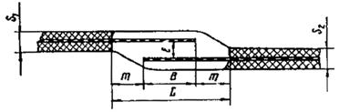
|
|
В
|
Ширина нахлеста армировки
|
|
L
|
Ширина проплавленного участка
|
|
т
|
Величина усиления (галтели)
|
|
l
|
Расстояние между армировкой
|
|
S
|
Толщина свариваемых кромок
|